Lectures · Bài giảng › L01
Functions, and the first ideas of limitsHàm số và những ý tưởng đầu tiên về giới hạn
The first half (slides 4–29) is mostly vocabulary from school. Go quickly but stay precise, because every later topic reuses it: domain, even/odd, composition. The lecturer marks slides 17–29 as self-study, so skim them as a checklist.
The second half (slides 30–47) introduces the limit, the idea that separates calculus from algebra. Spend most of the time on slides 33–42: tangent → limit → ε–δ. Cores are marked ★★★, so if time is short, teach those and skip ★.
Nửa đầu (slide 4–29) chủ yếu là từ vựng đã học ở phổ thông. Đi nhanh nhưng phải chính xác, vì mọi phần sau đều dùng lại: tập xác định, hàm chẵn/lẻ, hàm hợp. Giảng viên đánh dấu slide 17–29 là tự học, nên chỉ lướt qua như một danh sách kiểm tra.
Nửa sau (slide 30–47) giới thiệu giới hạn, ý tưởng phân biệt giải tích với đại số. Dành nhiều thời gian nhất cho slide 33–42: tiếp tuyến → giới hạn → ε–δ. Slide cốt lõi được đánh dấu ★★★, nếu thiếu thời gian thì dạy những slide này và bỏ qua ★.
Textbook · Giáo trình: Thomas ch. 1 (1.1–1.3) and ch. 2 (2.1–2.4) · Stewart ch. 1 (1.1–1.3) and ch. 2 (2.1–2.4)
Slide list · Danh sách slide (47)
Opening the course · Mở đầu môn học
★ Context · Bổ trợ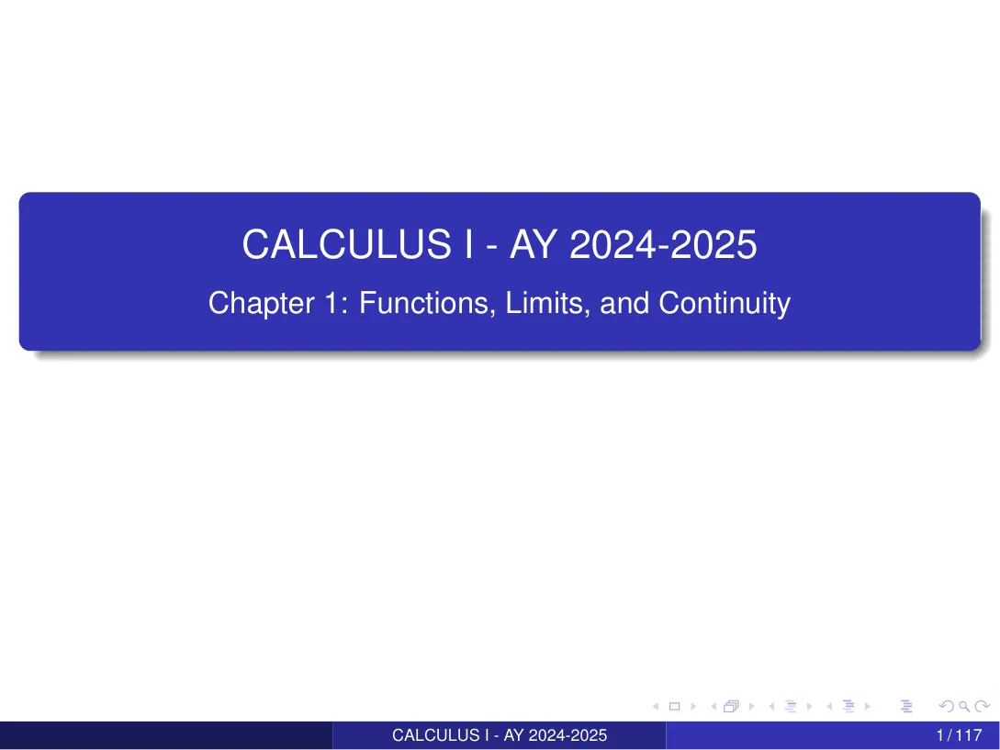
Open the course. Chapter 1 has three parts (functions, limits, continuity) and today covers functions and the first half of limits. Give the student a one-line goal: calculus is the mathematics of change, and everything in it is built from functions and limits.
Mở đầu môn học. Chương 1 gồm ba phần (hàm số, giới hạn, liên tục); hôm nay đi hết phần hàm số và nửa đầu phần giới hạn. Nói một câu mục tiêu: giải tích là toán học của sự thay đổi, và mọi thứ trong đó được xây từ hàm số và giới hạn.
Roadmap of the chapter · Lộ trình của chương
★ Context · Bổ trợ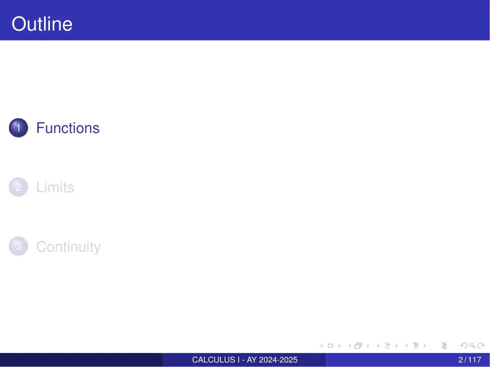
Roadmap: 1 Functions → 2 Limits → 3 Continuity. Tell the student that continuity is just "the limit equals the value", so limits must come first.
Lộ trình: 1 Hàm số → 2 Giới hạn → 3 Liên tục. Nói với bạn rằng liên tục chỉ là "giới hạn bằng giá trị của hàm", nên giới hạn phải học trước.
What the functions section covers · Phần hàm số gồm những gì
★ Context · Bổ trợ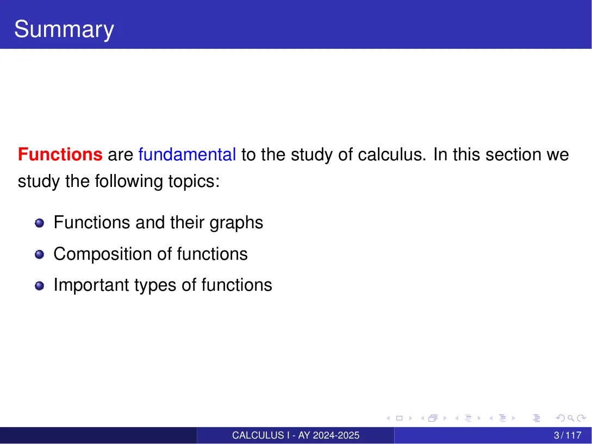
Three topics: functions and their graphs, composition, and the important types of functions. Say that the first two are taught carefully and the third is revision.
Ba chủ đề: hàm số và đồ thị, hàm hợp, và các loại hàm quan trọng. Nói rằng hai chủ đề đầu được dạy kỹ, chủ đề thứ ba là ôn lại.
What is a function? · Hàm số là gì?
★★★ Core · Cốt lõi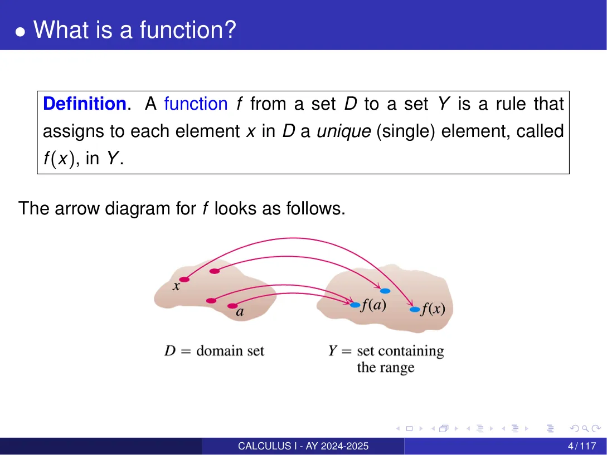
Read the definition aloud and put the weight on the word unique: each input $x$ has exactly one output $f(x)$. The arrow diagram shows it: every point of $D$ sends out exactly one arrow. Two arrows may land on the same point of $Y$, but one point of $D$ never sends two.
Ask: is $y^2=x$ a function of $x$? No: $x=4$ would give both $y=2$ and $y=-2$.
Đọc định nghĩa và nhấn mạnh từ duy nhất: mỗi giá trị đầu vào $x$ chỉ cho đúng một giá trị đầu ra $f(x)$. Sơ đồ mũi tên cho thấy điều đó: mỗi điểm của $D$ phát ra đúng một mũi tên. Hai mũi tên có thể rơi vào cùng một điểm của $Y$, nhưng một điểm của $D$ không bao giờ phát ra hai mũi tên.
Hỏi bạn: $y^2=x$ có phải là hàm của $x$ không? Không: với $x=4$ ta được cả $y=2$ lẫn $y=-2$.
Every definition in the course (limit, derivative, integral) is about a function, and "unique output" is exactly what the vertical line test checks on a graph.
Mọi định nghĩa trong môn (giới hạn, đạo hàm, tích phân) đều nói về một hàm số, và "đầu ra duy nhất" chính là điều mà phép thử đường thẳng đứng kiểm tra trên đồ thị.
Does the equation $x^2+y^2=1$ define $y$ as a function of $x$ on $[-1,1]$? Justify with one value of $x$.
Phương trình $x^2+y^2=1$ có xác định $y$ là hàm của $x$ trên $[-1,1]$ không? Giải thích bằng một giá trị của $x$.
Answer and solution · Đáp án và lời giải
Answer · Đáp án: No
For $x=0$ both $y=1$ and $y=-1$ satisfy the equation, so one input has two outputs. (The upper half $y=\sqrt{1-x^2}$ alone is a function.)
Với $x=0$ cả $y=1$ lẫn $y=-1$ đều thỏa phương trình, nên một đầu vào có hai đầu ra. (Riêng nửa trên $y=\sqrt{1-x^2}$ thì là một hàm.)
Domain, range and the machine picture · Tập xác định, tập giá trị và hình ảnh cái máy
★★★ Core · Cốt lõi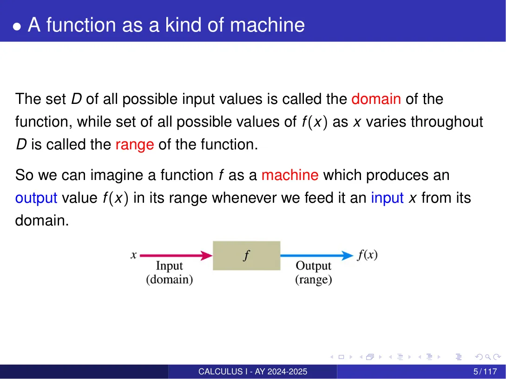
Name the two sets. The domain $D$ is every allowed input; the range is the set of outputs that actually occur. Use the machine picture: put $x$ in, get $f(x)$ out, and if $x$ is not allowed the machine refuses.
Stress that the range is what is actually hit, which can be smaller than the set $Y$ in the definition. Example: $f(x)=x^2$ with $Y=\mathbb R$ has range $[0,\infty)$.
Gọi tên hai tập. Tập xác định $D$ là mọi giá trị đầu vào được phép; tập giá trị (range) là tập các giá trị đầu ra thực sự xuất hiện. Dùng hình ảnh cái máy: bỏ $x$ vào, nhận $f(x)$ ra, và nếu $x$ không được phép thì máy từ chối.
Nhấn mạnh tập giá trị là những giá trị thực sự đạt được, có thể nhỏ hơn tập $Y$ trong định nghĩa. Ví dụ: $f(x)=x^2$ với $Y=\mathbb R$ có tập giá trị $[0,\infty)$.
Find the range of $f(x)=x^2+1$ and of $g(x)=\dfrac1x$ (natural domains).
Tìm tập giá trị của $f(x)=x^2+1$ và của $g(x)=\dfrac1x$ (trên tập xác định tự nhiên).
Answer and solution · Đáp án và lời giải
Answer · Đáp án: $f$: $[1,\infty)$; $g$: $\mathbb R\setminus\{0\}$
Since $x^2\ge0$ we get $f(x)\ge1$, and every value $\ge1$ occurs (take $x=\sqrt{y-1}$). For $g$, $\frac1x$ is never $0$ but equals any nonzero $y$ at $x=\frac1y$.
Vì $x^2\ge0$ nên $f(x)\ge1$, và mọi giá trị $\ge1$ đều đạt được (lấy $x=\sqrt{y-1}$). Với $g$, $\frac1x$ không bao giờ bằng $0$ nhưng nhận mọi giá trị khác $0$ tại $x=\frac1y$.
Four ways to describe a function · Bốn cách mô tả một hàm số
★ Context · Bổ trợ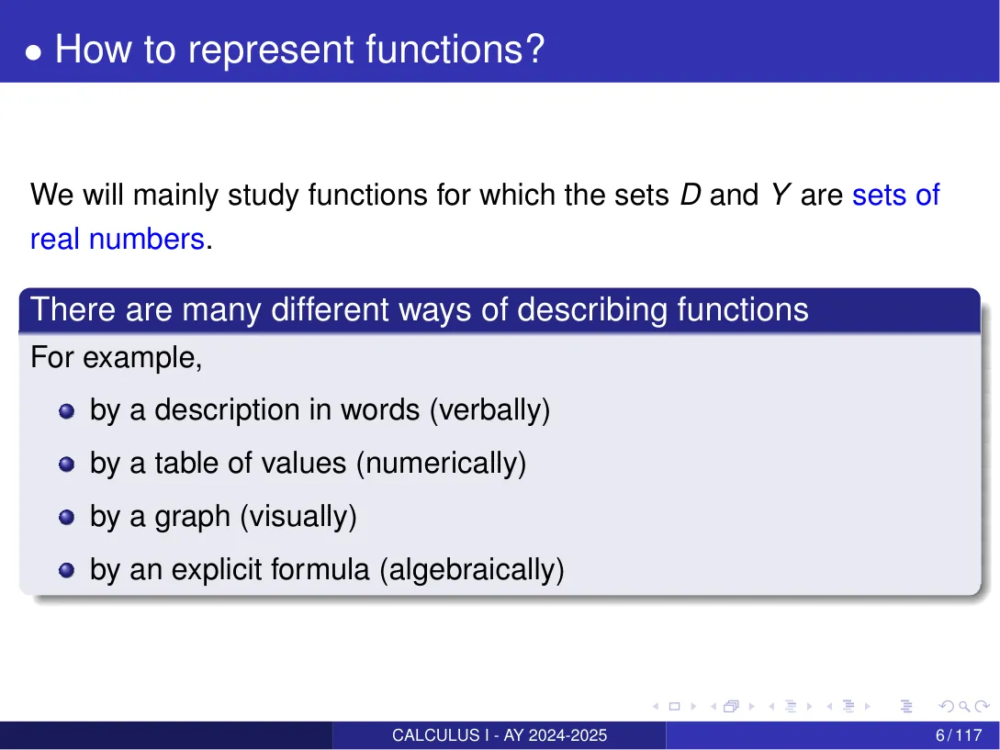
Four representations: in words, by a table, by a graph, by a formula. In this course we mostly use formulas and graphs, but remind the student that a table of measurements is also a function. Ask for one example of each, e.g. "postage depends on weight" is a function described in words.
Bốn cách biểu diễn: bằng lời, bằng bảng giá trị, bằng đồ thị, bằng công thức. Trong môn này chủ yếu dùng công thức và đồ thị, nhưng nhắc rằng một bảng số liệu đo đạc cũng là một hàm. Yêu cầu bạn cho một ví dụ cho mỗi cách, chẳng hạn "cước bưu phí phụ thuộc cân nặng" là hàm được mô tả bằng lời.
The graph of a function · Đồ thị của hàm số
★★ Important · Quan trọng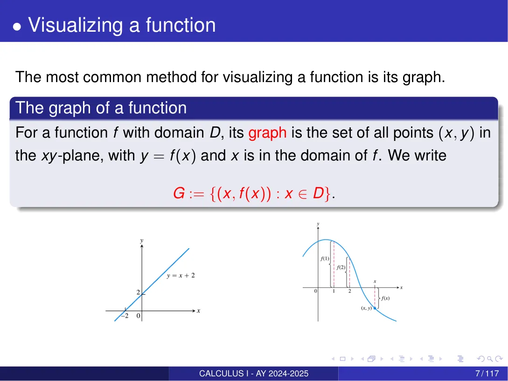
The graph is the set of all points $(x,f(x))$: it is the function drawn. Link it to slide 4: a curve is the graph of a function exactly when every vertical line meets it at most once. That is the vertical line test.
Đồ thị là tập mọi điểm $(x,f(x))$: chính là hàm số được vẽ ra. Nối với slide 4: một đường cong là đồ thị của một hàm số khi và chỉ khi mọi đường thẳng đứng cắt nó tối đa một điểm. Đó là phép thử đường thẳng đứng.
Domain convention and an exercise · Quy ước tập xác định và bài tập
★★★ Core · Cốt lõi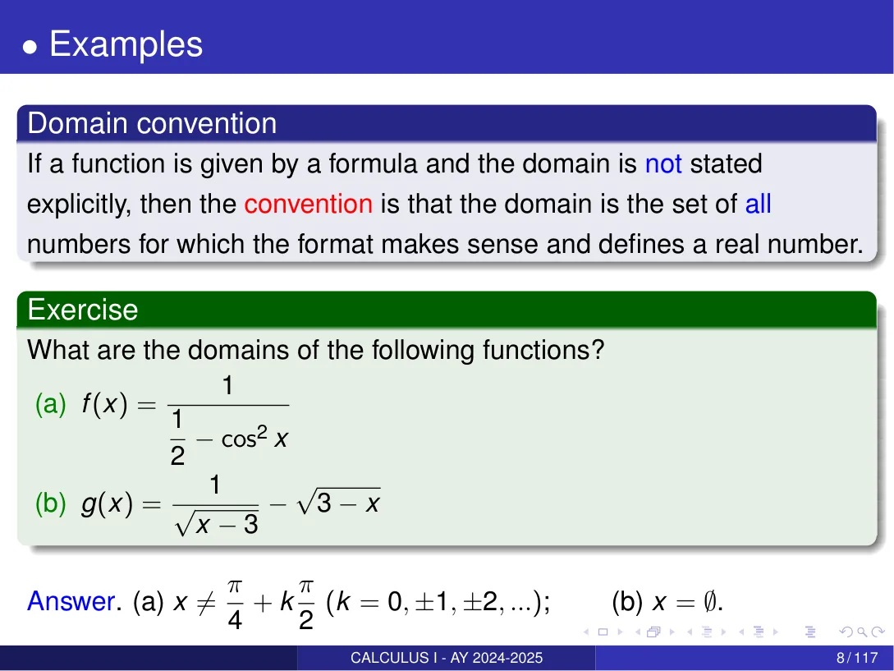
Convention: if only a formula is given, the domain is every real $x$ for which the formula makes sense: no zero denominator, no even root of a negative number, no logarithm of a non-positive number. Then do the slide's exercise live.
(a) The denominator $\frac12-\cos^2x$ vanishes when $\cos^2x=\frac12$, i.e. $\cos x=\pm\frac{\sqrt2}2$, i.e. $x=\frac\pi4+k\frac\pi2$. So the domain is $\mathbb R\setminus\{\frac\pi4+k\frac\pi2: k\in\mathbb Z\}$.
(b) $\frac1{\sqrt{x-3}}$ needs $x>3$ while $\sqrt{3-x}$ needs $x\le3$. No number does both, so the domain is $\varnothing$ (the slide writes "$x=\varnothing$"; read it as "the domain is empty").
Quy ước: nếu chỉ cho công thức thì tập xác định là mọi số thực $x$ để công thức có nghĩa: mẫu khác $0$, căn bậc chẵn không lấy số âm, logarit không lấy số không dương. Sau đó làm bài tập trên slide ngay tại lớp.
(a) Mẫu $\frac12-\cos^2x$ bằng $0$ khi $\cos^2x=\frac12$, tức $\cos x=\pm\frac{\sqrt2}2$, tức $x=\frac\pi4+k\frac\pi2$. Vậy tập xác định là $\mathbb R\setminus\{\frac\pi4+k\frac\pi2: k\in\mathbb Z\}$.
(b) $\frac1{\sqrt{x-3}}$ cần $x>3$ còn $\sqrt{3-x}$ cần $x\le3$. Không số nào thỏa cả hai, nên tập xác định là $\varnothing$ (slide viết "$x=\varnothing$", hiểu là "tập xác định rỗng").
Most limit, derivative and integral problems start by asking where the function is defined; a missed restriction is the commonest way to lose a mark.
Hầu hết bài giới hạn, đạo hàm, tích phân đều bắt đầu bằng câu hỏi hàm xác định ở đâu; bỏ sót một điều kiện là cách mất điểm phổ biến nhất.
Find the domain of $f(x)=\dfrac{\sqrt{x+2}}{x-1}$.
Tìm tập xác định của $f(x)=\dfrac{\sqrt{x+2}}{x-1}$.
Answer and solution · Đáp án và lời giải
Answer · Đáp án: $[-2,1)\cup(1,\infty)$
The root needs $x+2\ge0$, i.e. $x\ge-2$; the denominator needs $x\ne1$.
Căn cần $x+2\ge0$, tức $x\ge-2$; mẫu cần $x\ne1$.
Find the domain of $g(x)=\ln(4-x^2)$.
Tìm tập xác định của $g(x)=\ln(4-x^2)$.
Answer and solution · Đáp án và lời giải
Answer · Đáp án: $(-2,2)$
The logarithm needs $4-x^2>0$, i.e. $x^2<4$, i.e. $-2<x<2$.
Logarit cần $4-x^2>0$, tức $x^2<4$, tức $-2<x<2$.
Piecewise-defined functions · Hàm xác định theo từng khoảng
★★ Important · Quan trọng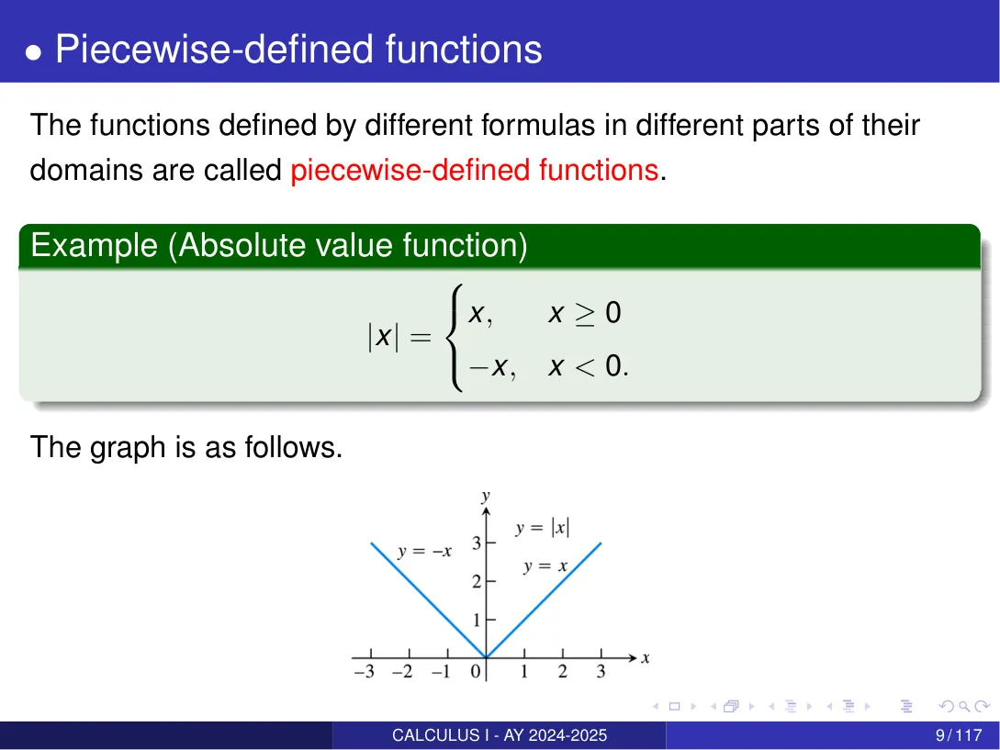
A piecewise function uses different formulas on different parts of its domain. The model example is the absolute value: $|x|=x$ for $x\ge0$ and $-x$ for $x<0$, a "V" with its corner at the origin. To evaluate, first decide which piece the input belongs to. Warn the student that a piecewise function is one function, not two.
Hàm xác định theo từng khoảng dùng các công thức khác nhau trên các phần khác nhau của tập xác định. Ví dụ mẫu là giá trị tuyệt đối: $|x|=x$ khi $x\ge0$ và $-x$ khi $x<0$, đồ thị hình chữ "V" với đỉnh tại gốc tọa độ. Để tính giá trị, trước hết xác định đầu vào thuộc khoảng nào. Lưu ý đây là một hàm, không phải hai hàm.
Let $f(x)=\begin{cases}x^2,&x<1\\3-x,&x\ge1.\end{cases}$ Compute $f(-2)$, $f(1)$ and $f(4)$.
Cho $f(x)=\begin{cases}x^2,&x<1\\3-x,&x\ge1.\end{cases}$ Tính $f(-2)$, $f(1)$ và $f(4)$.
Answer and solution · Đáp án và lời giải
Answer · Đáp án: $f(-2)=4,\ f(1)=2,\ f(4)=-1$
$-2<1$ uses $x^2$: $4$. $x=1$ belongs to the second piece ($x\ge1$): $3-1=2$. $4\ge1$: $3-4=-1$.
$-2<1$ dùng $x^2$: $4$. $x=1$ thuộc khoảng thứ hai ($x\ge1$): $3-1=2$. $4\ge1$: $3-4=-1$.
Even and odd functions · Hàm chẵn và hàm lẻ
★★★ Core · Cốt lõi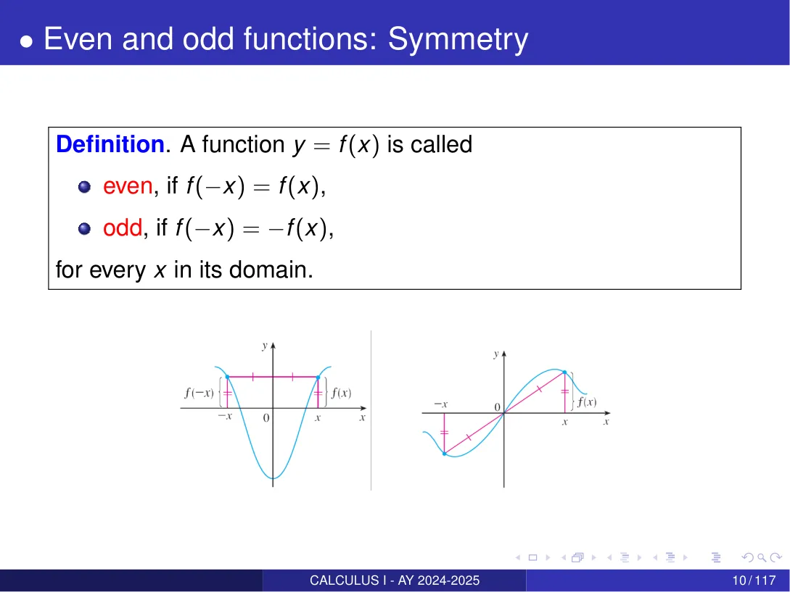
Definitions: even means $f(-x)=f(x)$, odd means $f(-x)=-f(x)$, for every $x$ in the domain, so the domain must be symmetric about $0$ first. Examples: $x^2,\cos x,|x|$ are even; $x^3,\sin x,\tan x$ are odd.
Practical rule: replace $x$ by $-x$, simplify, and compare with $f(x)$ and with $-f(x)$.
Định nghĩa: hàm chẵn nghĩa là $f(-x)=f(x)$, hàm lẻ nghĩa là $f(-x)=-f(x)$, với mọi $x$ thuộc tập xác định, nên trước hết tập xác định phải đối xứng qua $0$. Ví dụ: $x^2,\cos x,|x|$ là hàm chẵn; $x^3,\sin x,\tan x$ là hàm lẻ.
Quy tắc thực hành: thay $x$ bằng $-x$, rút gọn, rồi so với $f(x)$ và với $-f(x)$.
Symmetry halves the work later: in the integrals chapter, $\int_{-a}^{a}f=0$ for odd $f$ and $2\int_0^a f$ for even $f$.
Tính đối xứng giúp giảm một nửa việc tính toán về sau: ở chương tích phân, $\int_{-a}^{a}f=0$ nếu $f$ lẻ và $2\int_0^a f$ nếu $f$ chẵn.
Even and odd: symmetry of the graph, and an exercise · Chẵn và lẻ: tính đối xứng của đồ thị, và bài tập
★★★ Core · Cốt lõi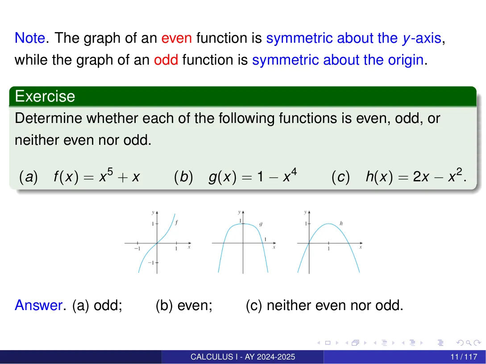
Geometry: an even graph is symmetric about the $y$-axis, an odd graph about the origin. Now the slide's exercise:
(a) $f(-x)=(-x)^5+(-x)=-x^5-x=-f(x)$: odd.
(b) $g(-x)=1-(-x)^4=1-x^4=g(x)$: even.
(c) $h(-x)=-2x-x^2$, which equals neither $h(x)=2x-x^2$ nor $-h(x)=-2x+x^2$: neither.
Hình học: đồ thị hàm chẵn đối xứng qua trục $Oy$, đồ thị hàm lẻ đối xứng qua gốc tọa độ. Bây giờ làm bài tập trên slide:
(a) $f(-x)=(-x)^5+(-x)=-x^5-x=-f(x)$: lẻ.
(b) $g(-x)=1-(-x)^4=1-x^4=g(x)$: chẵn.
(c) $h(-x)=-2x-x^2$, không bằng $h(x)=2x-x^2$ cũng không bằng $-h(x)=-2x+x^2$: không chẵn không lẻ.
Is $f(x)=x^3-\sin x$ even, odd or neither?
$f(x)=x^3-\sin x$ là hàm chẵn, lẻ hay không chẵn không lẻ?
Answer and solution · Đáp án và lời giải
Answer · Đáp án: odd
$f(-x)=(-x)^3-\sin(-x)=-x^3+\sin x=-(x^3-\sin x)=-f(x)$.
$f(-x)=(-x)^3-\sin(-x)=-x^3+\sin x=-(x^3-\sin x)=-f(x)$. Vậy $f$ là hàm lẻ.
Is $g(x)=\dfrac{x}{x-1}$ even, odd or neither?
$g(x)=\dfrac{x}{x-1}$ là hàm chẵn, lẻ hay không chẵn không lẻ?
Answer and solution · Đáp án và lời giải
Answer · Đáp án: neither
The domain $\mathbb R\setminus\{1\}$ is not symmetric about $0$ ($-1$ is allowed but $1$ is not), so neither definition can hold.
Tập xác định $\mathbb R\setminus\{1\}$ không đối xứng qua $0$ ($-1$ được phép nhưng $1$ thì không), nên cả hai định nghĩa đều không thể đúng. Vậy $g$ không chẵn không lẻ.
Show that $f(x)=\ln\dfrac{1+x}{1-x}$ on $(-1,1)$ is odd.
Chứng tỏ $f(x)=\ln\dfrac{1+x}{1-x}$ trên $(-1,1)$ là hàm lẻ.
Answer and solution · Đáp án và lời giải
Answer · Đáp án: odd
The domain $(-1,1)$ is symmetric. $f(-x)=\ln\dfrac{1-x}{1+x}=\ln\left(\dfrac{1+x}{1-x}\right)^{-1}=-f(x)$.
Tập xác định $(-1,1)$ đối xứng. $f(-x)=\ln\dfrac{1-x}{1+x}=\ln\left(\dfrac{1+x}{1-x}\right)^{-1}=-f(x)$. Vậy $f$ là hàm lẻ.
Increasing and decreasing functions · Hàm đồng biến và nghịch biến
★★ Important · Quan trọng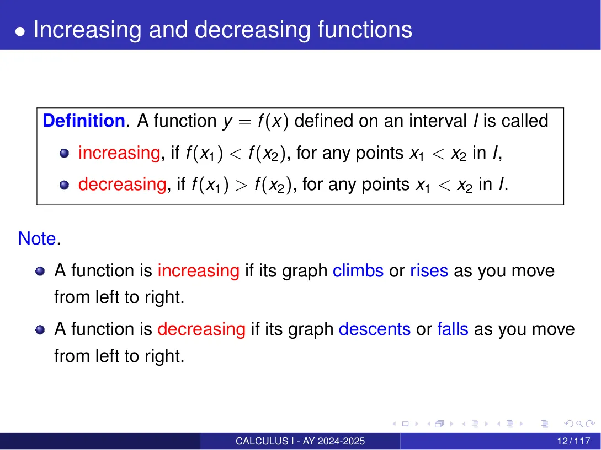
Increasing on an interval $I$: a larger input always gives a larger output ($x_1<x_2\Rightarrow f(x_1)<f(x_2)$). Decreasing reverses the inequality. Reading rule: the graph climbs when read from left to right.
The words depend on the interval: $x^2$ decreases on $(-\infty,0]$ and increases on $[0,\infty)$, so on all of $\mathbb R$ it is neither. Foreshadow: the derivative will tell us the direction (Chapter 3).
Đồng biến (tăng) trên khoảng $I$: đầu vào lớn hơn luôn cho đầu ra lớn hơn ($x_1<x_2\Rightarrow f(x_1)<f(x_2)$). Nghịch biến (giảm) thì đổi chiều bất đẳng thức. Cách đọc: đồ thị đi lên khi đọc từ trái sang phải.
Các từ này phụ thuộc vào khoảng: $x^2$ nghịch biến trên $(-\infty,0]$ và đồng biến trên $[0,\infty)$, nên trên cả $\mathbb R$ nó không đồng biến cũng không nghịch biến. Gợi ý trước: đạo hàm sẽ cho biết chiều biến thiên (Chương 3).
On which intervals is $f(x)=(x-1)^2$ decreasing and increasing?
Trên những khoảng nào hàm $f(x)=(x-1)^2$ nghịch biến và đồng biến?
Answer and solution · Đáp án và lời giải
Answer · Đáp án: decreasing on $(-\infty,1]$, increasing on $[1,\infty)$
It is the parabola $x^2$ shifted right by $1$, so its vertex is at $x=1$: it falls up to the vertex and rises after it.
Đây là parabol $x^2$ tịnh tiến sang phải $1$ đơn vị nên đỉnh ở $x=1$: hàm giảm cho tới đỉnh rồi tăng sau đỉnh. Vậy nghịch biến trên $(-\infty,1]$, đồng biến trên $[1,\infty)$.
Composition of functions: the definition · Hàm hợp: định nghĩa
★★★ Core · Cốt lõi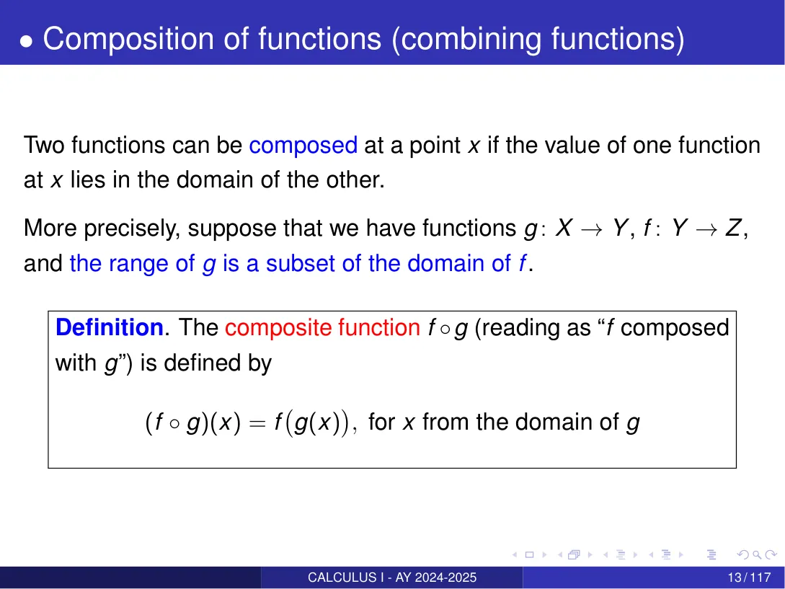
Composition means feed the output of one function into another. The technical condition: the range of $g$ must lie inside the domain of $f$, so $f$ can accept what $g$ produces. The notation $(f\circ g)(x)=f(g(x))$ reads right to left: apply $g$ first. Picture two machines in a row.
Hàm hợp nghĩa là lấy đầu ra của hàm này làm đầu vào của hàm kia. Điều kiện kỹ thuật: tập giá trị của $g$ phải nằm trong tập xác định của $f$, để $f$ nhận được cái $g$ tạo ra. Ký hiệu $(f\circ g)(x)=f(g(x))$ đọc từ phải sang trái: áp dụng $g$ trước. Hình dung hai cái máy nối tiếp.
The chain rule (Chapter 2) and substitution in integrals (Chapter 4) are both about composite functions; if the student cannot take a composite apart, both will be hard.
Quy tắc đạo hàm hàm hợp (Chương 2) và đổi biến trong tích phân (Chương 4) đều nói về hàm hợp; nếu chưa biết tách một hàm hợp thì cả hai phần đó sẽ khó.
Arrow diagram of $f\circ g$ · Sơ đồ mũi tên của $f\circ g$
★★ Important · Quan trọng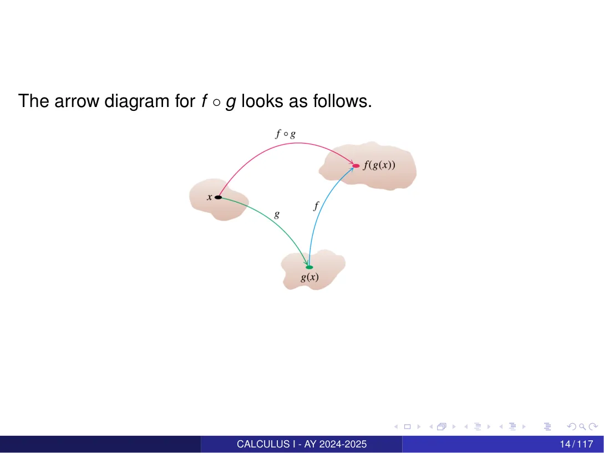
Trace one element through the diagram: $x\in X$ goes to $g(x)\in Y$, then to $f(g(x))\in Z$. The composite is the shortcut arrow from $X$ straight to $Z$. The picture also shows why the range of $g$ must sit inside the domain of $f$: otherwise an arrow arriving in $Y$ would have nowhere to continue.
Lần theo một phần tử qua sơ đồ: $x\in X$ đi tới $g(x)\in Y$, rồi tới $f(g(x))\in Z$. Hàm hợp là mũi tên đi tắt từ $X$ thẳng tới $Z$. Hình vẽ cũng cho thấy vì sao tập giá trị của $g$ phải nằm trong tập xác định của $f$: nếu không, mũi tên tới $Y$ sẽ không có chỗ đi tiếp.
Composition: an example with domains · Hàm hợp: ví dụ với tập xác định
★★★ Core · Cốt lõi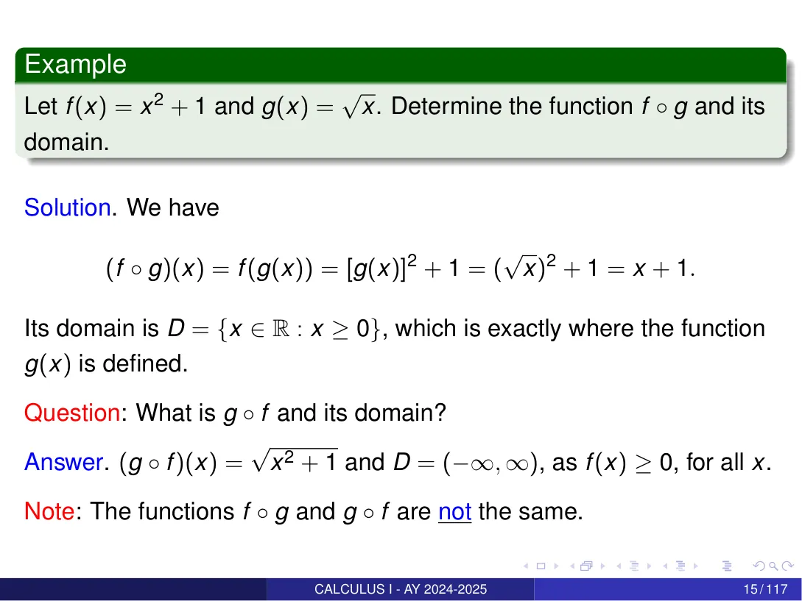
Take $f(x)=x^2+1$ and $g(x)=\sqrt x$.
$(f\circ g)(x)=(\sqrt x)^2+1=x+1$, but the domain is $x\ge0$, not all of $\mathbb R$: it is inherited from $g$, the function applied first.
Question on the slide: $(g\circ f)(x)=\sqrt{x^2+1}$ with domain $(-\infty,\infty)$, because $x^2+1\ge1>0$ for every $x$. Conclude: $f\circ g\ne g\circ f$ (different formulas, different domains).
Lấy $f(x)=x^2+1$ và $g(x)=\sqrt x$.
$(f\circ g)(x)=(\sqrt x)^2+1=x+1$, nhưng tập xác định là $x\ge0$, không phải toàn bộ $\mathbb R$: nó thừa hưởng từ $g$, hàm được áp dụng trước.
Câu hỏi trên slide: $(g\circ f)(x)=\sqrt{x^2+1}$ với tập xác định $(-\infty,\infty)$, vì $x^2+1\ge1>0$ với mọi $x$. Kết luận: $f\circ g\ne g\circ f$ (khác công thức, khác tập xác định).
Let $f(x)=\sqrt x$ and $g(x)=x-4$. Find $f\circ g$ and $g\circ f$ with their domains.
Cho $f(x)=\sqrt x$ và $g(x)=x-4$. Tìm $f\circ g$ và $g\circ f$ cùng tập xác định.
Answer and solution · Đáp án và lời giải
Answer · Đáp án: $(f\circ g)(x)=\sqrt{x-4}$, domain $[4,\infty)$; $(g\circ f)(x)=\sqrt x-4$, domain $[0,\infty)$
$f(g(x))=\sqrt{x-4}$ needs $x-4\ge0$. $g(f(x))=\sqrt x-4$ needs only $x\ge0$ (the domain of the inner function $f$).
$f(g(x))=\sqrt{x-4}$ cần $x-4\ge0$. $g(f(x))=\sqrt x-4$ chỉ cần $x\ge0$ (tập xác định của hàm trong $f$).
Let $f(x)=\dfrac1x$ and $g(x)=x^2-1$. Find $f\circ g$ and $g\circ f$ with their domains.
Cho $f(x)=\dfrac1x$ và $g(x)=x^2-1$. Tìm $f\circ g$ và $g\circ f$ cùng tập xác định.
Answer and solution · Đáp án và lời giải
Answer · Đáp án: $(f\circ g)(x)=\dfrac1{x^2-1}$, domain $\mathbb R\setminus\{-1,1\}$; $(g\circ f)(x)=\dfrac1{x^2}-1$, domain $\mathbb R\setminus\{0\}$
$f(g(x))=\frac1{x^2-1}$ fails where $x^2-1=0$, i.e. $x=\pm1$. $g(f(x))=\frac1{x^2}-1$ fails only at $x=0$.
$f(g(x))=\frac1{x^2-1}$ không xác định khi $x^2-1=0$, tức $x=\pm1$. $g(f(x))=\frac1{x^2}-1$ chỉ không xác định tại $x=0$.
Composition of three functions · Hợp của ba hàm
★★ Important · Quan trọng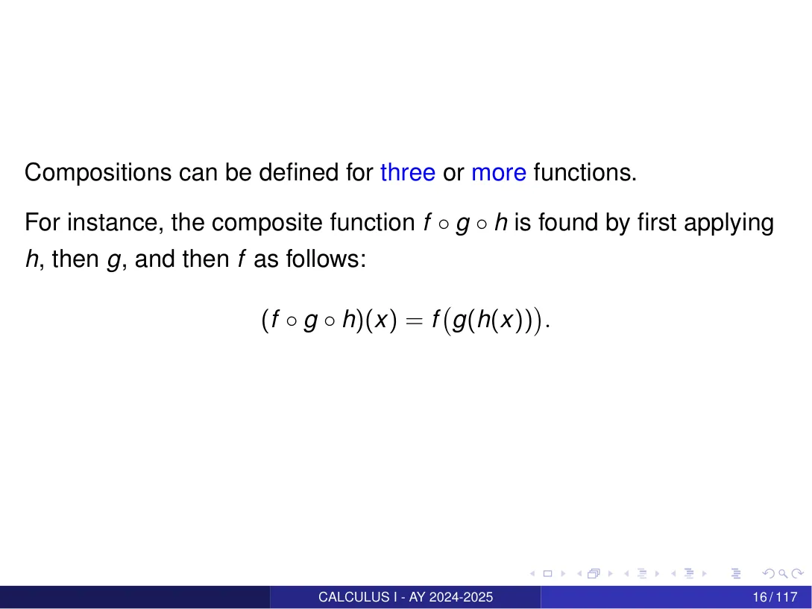
$(f\circ g\circ h)(x)=f(g(h(x)))$: work from the inside out, applying $h$, then $g$, then $f$. In practice you will need the reverse skill, taking a formula apart into layers. Peel the outermost operation first.
$(f\circ g\circ h)(x)=f(g(h(x)))$: tính từ trong ra ngoài, áp dụng $h$, rồi $g$, rồi $f$. Trong thực tế bạn cần kỹ năng ngược lại là tách một công thức thành các lớp. Bóc phép tính ngoài cùng trước.
Write $H(x)=\sin^2(3x+1)$ as $f\circ g\circ h$.
Viết $H(x)=\sin^2(3x+1)$ dưới dạng $f\circ g\circ h$.
Answer and solution · Đáp án và lời giải
Answer · Đáp án: $h(x)=3x+1,\ g(u)=\sin u,\ f(v)=v^2$
Innermost is $3x+1$; then the sine; the outermost operation is squaring.
Trong cùng là $3x+1$; rồi đến sin; phép ngoài cùng là bình phương.
Write $K(x)=e^{\sqrt{x^2+1}}$ as $f\circ g\circ h$.
Viết $K(x)=e^{\sqrt{x^2+1}}$ dưới dạng $f\circ g\circ h$.
Answer and solution · Đáp án và lời giải
Answer · Đáp án: $h(x)=x^2+1,\ g(u)=\sqrt u,\ f(v)=e^v$
Innermost $x^2+1$, then the square root, then the exponential.
Trong cùng là $x^2+1$, rồi căn bậc hai, rồi hàm mũ.
Self-study notice: the important types of functions · Thông báo tự học: các loại hàm quan trọng
★ Context · Bổ trợ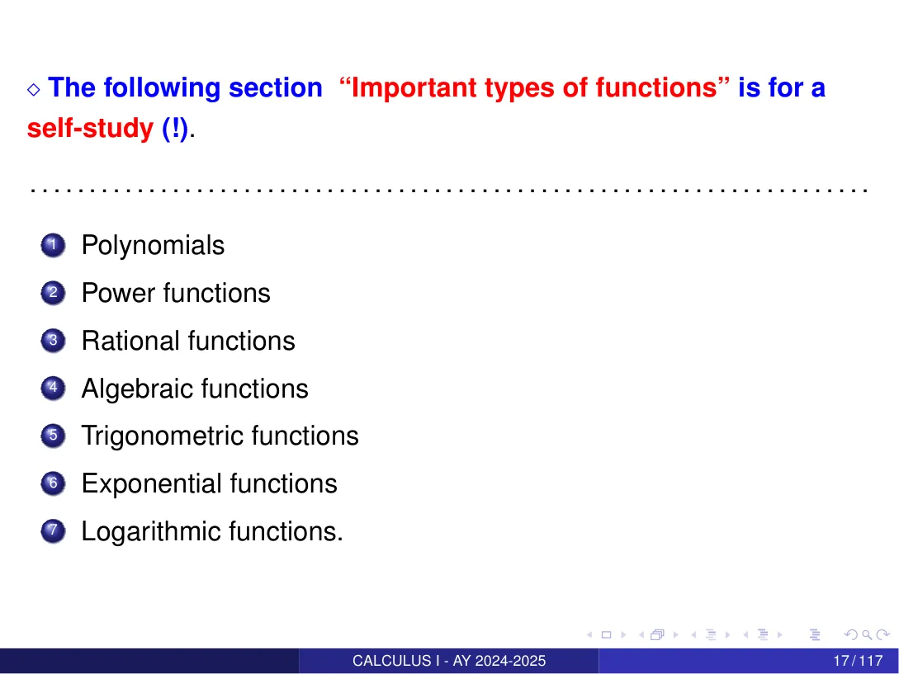
The lecturer marks the next part, seven families of functions, as self-study. Treat it as a vocabulary checklist: polynomial, power, rational, algebraic, trigonometric, exponential, logarithmic. For each, the student must know the domain and the shape of the graph. Go through the next slides quickly.
Giảng viên đánh dấu phần tiếp theo, bảy họ hàm số, là tự học. Coi đó là danh sách từ vựng cần nắm: đa thức, lũy thừa, hữu tỉ, đại số, lượng giác, mũ, logarit. Với mỗi loại, bạn cần biết tập xác định và dạng đồ thị. Đi nhanh qua các slide tiếp theo.
Polynomials · Đa thức
★★ Important · Quan trọng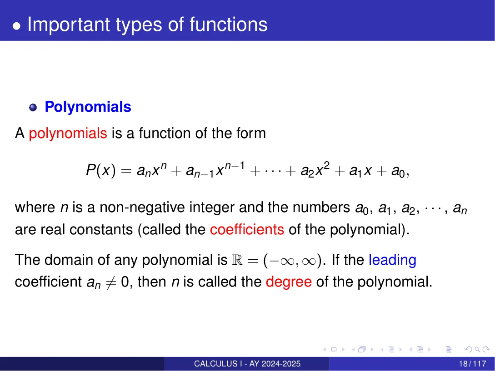
A polynomial is $P(x)=a_nx^n+\dots+a_1x+a_0$ with $n$ a non-negative integer. Its domain is all of $\mathbb R$. If $a_n\ne0$ then $n$ is the degree and $a_n$ the leading coefficient. The degree of a product is the sum of degrees.
Đa thức là $P(x)=a_nx^n+\dots+a_1x+a_0$ với $n$ là số nguyên không âm. Tập xác định là toàn bộ $\mathbb R$. Nếu $a_n\ne0$ thì $n$ là bậc và $a_n$ là hệ số cao nhất. Bậc của tích bằng tổng các bậc.
Give the degree and leading coefficient of $P(x)=(2x^2-1)(x^3+x)$.
Cho biết bậc và hệ số cao nhất của $P(x)=(2x^2-1)(x^3+x)$.
Answer and solution · Đáp án và lời giải
Answer · Đáp án: degree $5$, leading coefficient $2$
The leading terms multiply: $2x^2\cdot x^3=2x^5$.
Các số hạng cao nhất nhân với nhau: $2x^2\cdot x^3=2x^5$. Vậy bậc $5$, hệ số cao nhất $2$.
Linear, quadratic and cubic functions · Hàm bậc nhất, bậc hai và bậc ba
★ Context · Bổ trợ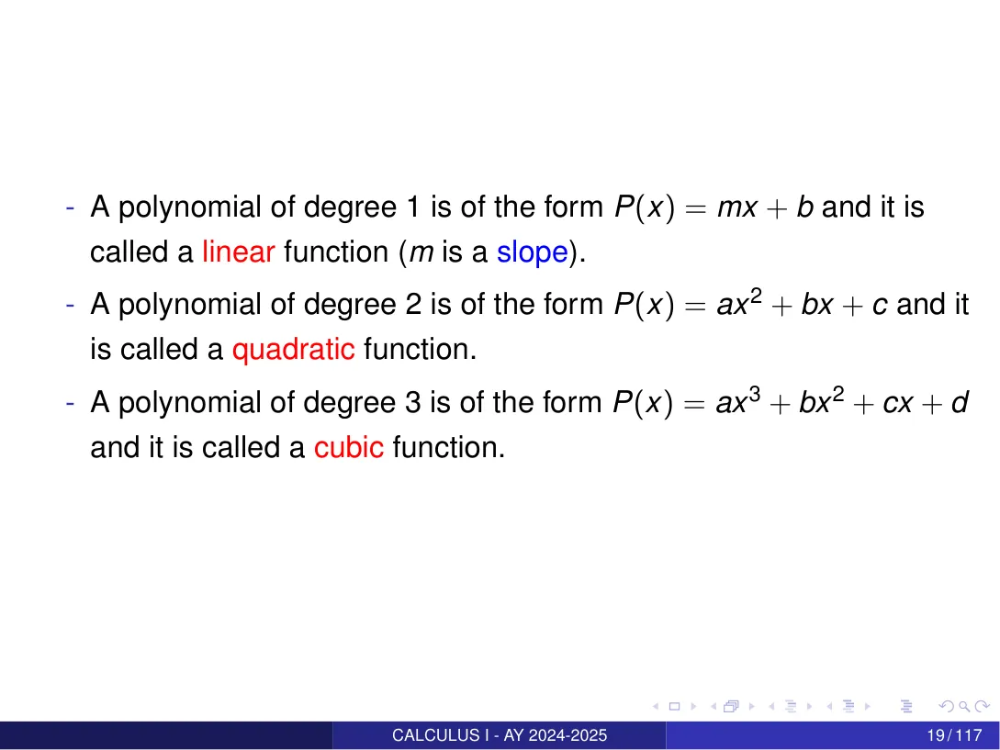
Degree 1: $mx+b$, a line with slope $m$. Degree 2: $ax^2+bx+c$, a parabola. Degree 3: $ax^3+bx^2+cx+d$, a cubic. Quick review of the line through two points: find the slope, then the intercept.
Bậc 1: $mx+b$, một đường thẳng có hệ số góc $m$. Bậc 2: $ax^2+bx+c$, một parabol. Bậc 3: $ax^3+bx^2+cx+d$, một hàm bậc ba. Ôn nhanh đường thẳng qua hai điểm: tìm hệ số góc, rồi tìm tung độ gốc.
Find the linear function whose graph passes through $(1,3)$ and $(3,7)$.
Tìm hàm bậc nhất có đồ thị đi qua $(1,3)$ và $(3,7)$.
Answer and solution · Đáp án và lời giải
Answer · Đáp án: $P(x)=2x+1$
Slope $m=\frac{7-3}{3-1}=2$; then $3=2\cdot1+b$ gives $b=1$.
Hệ số góc $m=\frac{7-3}{3-1}=2$; rồi $3=2\cdot1+b$ cho $b=1$.
Power functions: positive integer exponents · Hàm lũy thừa: số mũ nguyên dương
★★ Important · Quan trọng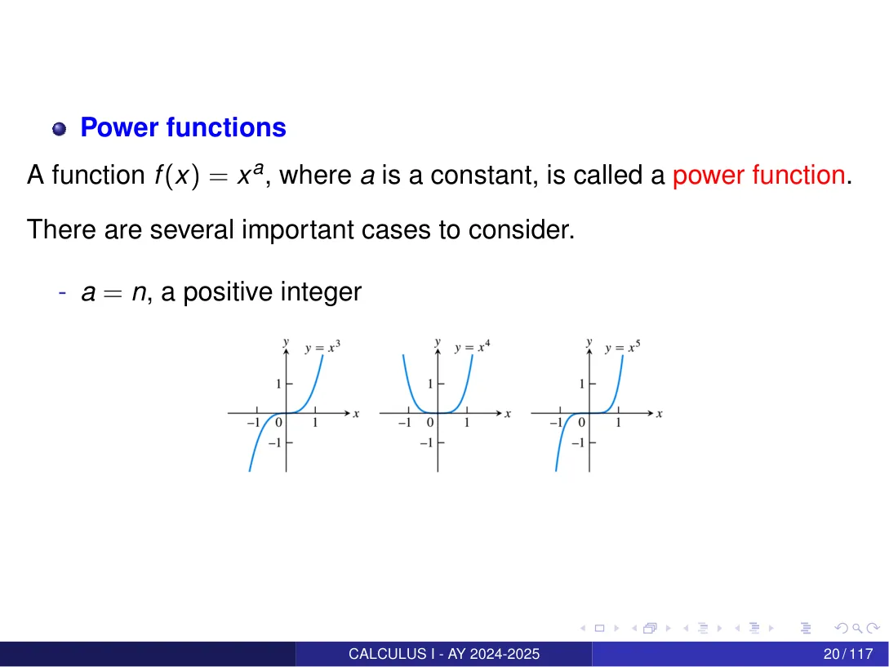
A power function is $x^a$ with $a$ a constant. First case $a=n$, a positive integer: $x,x^2,x^3,x^4,x^5$. Even powers give a "U" shape through $(0,0)$ and $(\pm1,1)$; odd powers give an "S" shape that is odd. As $n$ grows the graph hugs the axis more tightly on $(-1,1)$ and shoots up faster outside.
Hàm lũy thừa là $x^a$ với $a$ là hằng số. Trường hợp đầu $a=n$ là số nguyên dương: $x,x^2,x^3,x^4,x^5$. Lũy thừa chẵn cho hình chữ "U" đi qua $(0,0)$ và $(\pm1,1)$; lũy thừa lẻ cho hình chữ "S" là hàm lẻ. Khi $n$ tăng, đồ thị ôm sát trục hơn trong $(-1,1)$ và tăng nhanh hơn ở ngoài.
Power functions: negative and fractional exponents · Hàm lũy thừa: số mũ âm và số mũ phân số
★★ Important · Quan trọng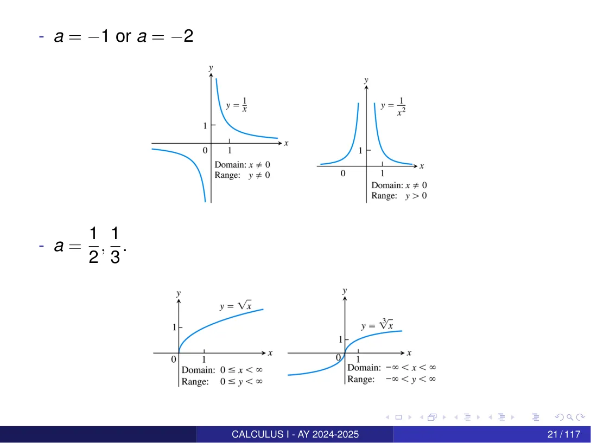
$a=-1$ gives the hyperbola $\frac1x$ (odd, two branches, $x\ne0$); $a=-2$ gives $\frac1{x^2}$ (even, always positive). $a=\frac12$ gives $\sqrt x$ with domain $[0,\infty)$; $a=\frac13$ gives the cube root, defined for all real $x$ and odd. The parity of the root index decides the domain.
$a=-1$ cho hyperbol $\frac1x$ (lẻ, hai nhánh, $x\ne0$); $a=-2$ cho $\frac1{x^2}$ (chẵn, luôn dương). $a=\frac12$ cho $\sqrt x$ với tập xác định $[0,\infty)$; $a=\frac13$ cho căn bậc ba, xác định với mọi $x$ thực và là hàm lẻ. Số mũ của căn là chẵn hay lẻ quyết định tập xác định.
State the domain of $x^{-1}$, $x^{-2}$, $x^{1/2}$ and $x^{1/3}$ (real cube root).
Nêu tập xác định của $x^{-1}$, $x^{-2}$, $x^{1/2}$ và $x^{1/3}$ (căn bậc ba thực).
Answer and solution · Đáp án và lời giải
Answer · Đáp án: $\mathbb R\setminus\{0\}$, $\mathbb R\setminus\{0\}$, $[0,\infty)$, $\mathbb R$
Negative exponents put $x$ in a denominator, so $x\ne0$. An even root needs $x\ge0$; an odd root accepts every real number.
Số mũ âm đưa $x$ xuống mẫu nên $x\ne0$. Căn bậc chẵn cần $x\ge0$; căn bậc lẻ nhận mọi số thực.
Rational functions · Hàm hữu tỉ
★★★ Core · Cốt lõi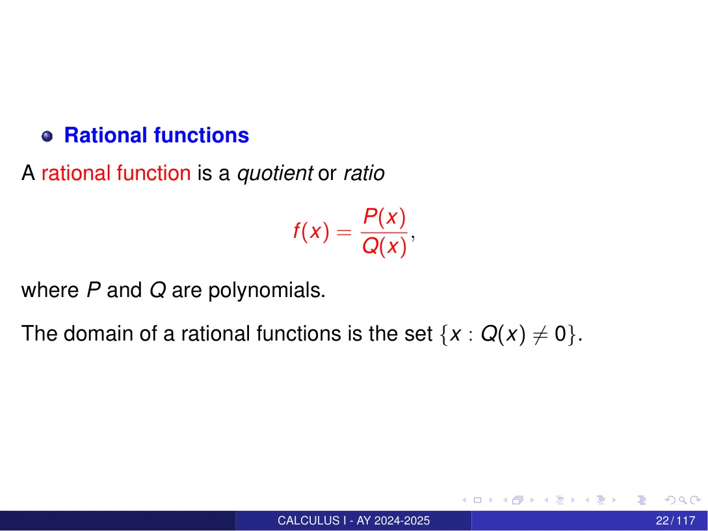
A rational function is a quotient $\frac{P(x)}{Q(x)}$ of two polynomials. Its domain is $\{x: Q(x)\ne0\}$: find the roots of the denominator and remove them. The zeros of the numerator (where the denominator is not zero) are the $x$-intercepts.
Hàm hữu tỉ là thương $\frac{P(x)}{Q(x)}$ của hai đa thức. Tập xác định là $\{x: Q(x)\ne0\}$: tìm nghiệm của mẫu rồi loại ra. Các nghiệm của tử (mà mẫu khác $0$) là giao điểm với trục hoành.
Find the domain of $f(x)=\dfrac{x+1}{x^2-5x+6}$.
Tìm tập xác định của $f(x)=\dfrac{x+1}{x^2-5x+6}$.
Answer and solution · Đáp án và lời giải
Answer · Đáp án: $\mathbb R\setminus\{2,3\}$
$x^2-5x+6=(x-2)(x-3)$, which vanishes at $x=2$ and $x=3$.
$x^2-5x+6=(x-2)(x-3)$ bằng $0$ tại $x=2$ và $x=3$.
Algebraic functions · Hàm đại số
★ Context · Bổ trợ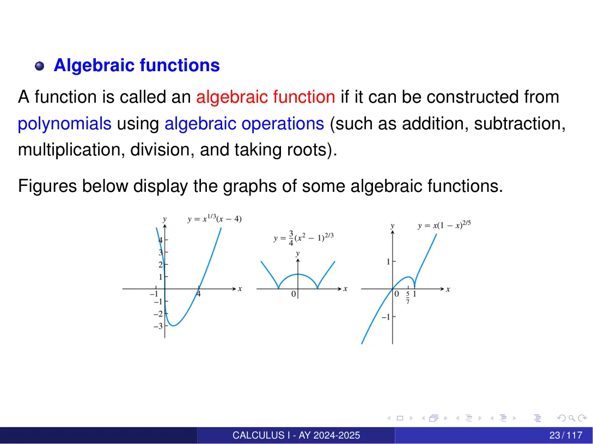
Algebraic functions are built from polynomials with $+,-,\times,\div$ and roots, for example $\sqrt{x^2+1}$ or $x^{2/3}$. Rational functions and polynomials are special cases. The graphs on the slide show some of them; the point is that the family is much larger than rational functions.
Hàm đại số được xây từ đa thức bằng các phép $+,-,\times,\div$ và lấy căn, ví dụ $\sqrt{x^2+1}$ hay $x^{2/3}$. Đa thức và hàm hữu tỉ là các trường hợp đặc biệt. Các đồ thị trên slide minh họa một số hàm; điểm cần nhớ là họ này rộng hơn nhiều so với hàm hữu tỉ.
Trigonometric functions and periodicity · Hàm lượng giác và tính tuần hoàn
★★★ Core · Cốt lõi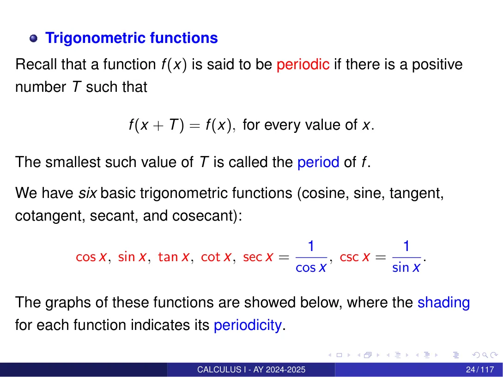
A function is periodic if $f(x+T)=f(x)$ for all $x$; the smallest positive such $T$ is the period. Six trigonometric functions: $\sin,\cos,\tan,\cot,\sec,\csc$, with $\sec=\frac1{\cos}$ and $\csc=\frac1{\sin}$. $\sin$ and $\cos$ have period $2\pi$; $\tan$ and $\cot$ have period $\pi$. Calculus always uses radians.
Hàm số tuần hoàn nếu $f(x+T)=f(x)$ với mọi $x$; số dương nhỏ nhất như vậy là chu kỳ. Sáu hàm lượng giác: $\sin,\cos,\tan,\cot,\sec,\csc$, với $\sec=\frac1{\cos}$ và $\csc=\frac1{\sin}$. $\sin$ và $\cos$ có chu kỳ $2\pi$; $\tan$ và $\cot$ có chu kỳ $\pi$. Giải tích luôn dùng radian.
Find the period of $f(x)=\sin3x$ and of $g(x)=\tan2x$.
Tìm chu kỳ của $f(x)=\sin3x$ và của $g(x)=\tan2x$.
Answer and solution · Đáp án và lời giải
Answer · Đáp án: $\dfrac{2\pi}3$ and $\dfrac\pi2$
Compressing the argument by $k$ divides the period by $k$: $\frac{2\pi}3$ for $\sin3x$ and $\frac\pi2$ for $\tan2x$ (the period of $\tan$ is $\pi$).
Nén đối số $k$ lần thì chu kỳ chia cho $k$: $\frac{2\pi}3$ với $\sin3x$ và $\frac\pi2$ với $\tan2x$ (chu kỳ của $\tan$ là $\pi$).
Graphs of $\cos x$ and $\sin x$ · Đồ thị của $\cos x$ và $\sin x$
★★ Important · Quan trọng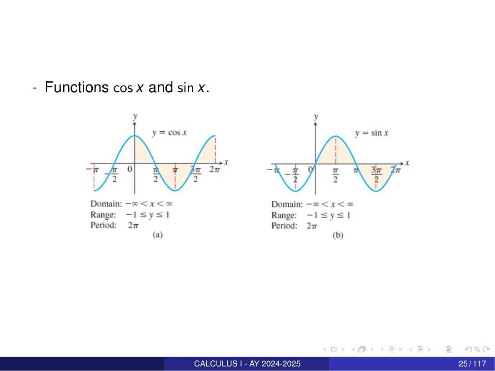
Both waves oscillate between $-1$ and $1$ with period $2\pi$. $\cos$ is even, $\sin$ is odd, and one is the other shifted: $\cos x=\sin\left(x+\frac\pi2\right)$. The shaded strip on the slide is one period.
Cả hai sóng dao động giữa $-1$ và $1$ với chu kỳ $2\pi$. $\cos$ là hàm chẵn, $\sin$ là hàm lẻ, và hàm này là hàm kia tịnh tiến: $\cos x=\sin\left(x+\frac\pi2\right)$. Dải tô màu trên slide là một chu kỳ.
Show that $\cos x=\sin\left(x+\frac\pi2\right)$ and that $\sin x=\cos\left(x-\frac\pi2\right)$.
Chứng tỏ $\cos x=\sin\left(x+\frac\pi2\right)$ và $\sin x=\cos\left(x-\frac\pi2\right)$.
Answer and solution · Đáp án và lời giải
Answer · Đáp án: Both identities hold.
Use $\sin(a+b)=\sin a\cos b+\cos a\sin b$ with $b=\frac\pi2$: $\sin\left(x+\frac\pi2\right)=\sin x\cdot0+\cos x\cdot1=\cos x$. The second follows by replacing $x$ by $x-\frac\pi2$.
Dùng $\sin(a+b)=\sin a\cos b+\cos a\sin b$ với $b=\frac\pi2$: $\sin\left(x+\frac\pi2\right)=\sin x\cdot0+\cos x\cdot1=\cos x$. Đẳng thức thứ hai suy ra bằng cách thay $x$ bởi $x-\frac\pi2$.
Graphs of $\tan x$ and $\sec x$ · Đồ thị của $\tan x$ và $\sec x$
★★ Important · Quan trọng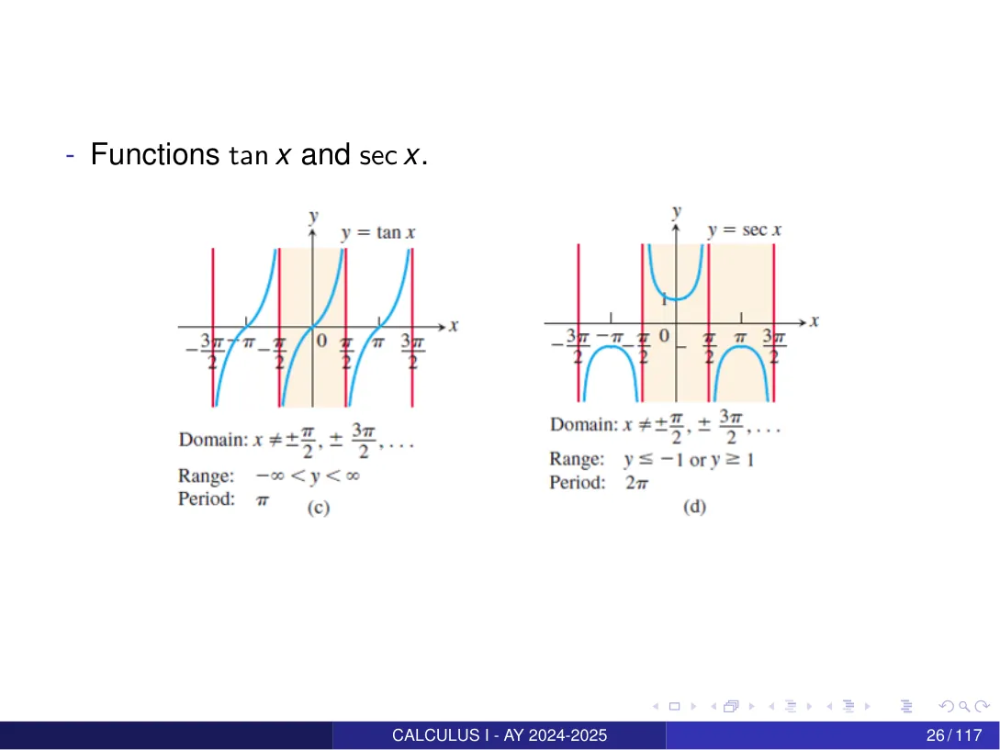
$\tan x=\frac{\sin x}{\cos x}$ and $\sec x=\frac1{\cos x}$ are undefined where $\cos x=0$, i.e. $x=\frac\pi2+k\pi$: vertical asymptotes there. $\tan$ is odd with period $\pi$ and takes every real value; $\sec$ is even, period $2\pi$, and never lies in $(-1,1)$.
$\tan x=\frac{\sin x}{\cos x}$ và $\sec x=\frac1{\cos x}$ không xác định khi $\cos x=0$, tức $x=\frac\pi2+k\pi$: ở đó có tiệm cận đứng. $\tan$ là hàm lẻ chu kỳ $\pi$ và nhận mọi giá trị thực; $\sec$ là hàm chẵn, chu kỳ $2\pi$, và không bao giờ nằm trong $(-1,1)$.
Where is $\tan x$ undefined? Write all such $x$.
$\tan x$ không xác định ở đâu? Viết tất cả các $x$ đó.
Answer and solution · Đáp án và lời giải
Answer · Đáp án: $x=\dfrac\pi2+k\pi,\ k\in\mathbb Z$
$\tan x=\frac{\sin x}{\cos x}$ fails exactly when $\cos x=0$, and $\cos x=0$ at $\frac\pi2$ plus any multiple of $\pi$.
$\tan x=\frac{\sin x}{\cos x}$ không xác định đúng khi $\cos x=0$, và $\cos x=0$ tại $\frac\pi2$ cộng với bội bất kỳ của $\pi$.
Graphs of $\csc x$ and $\cot x$ · Đồ thị của $\csc x$ và $\cot x$
★ Context · Bổ trợ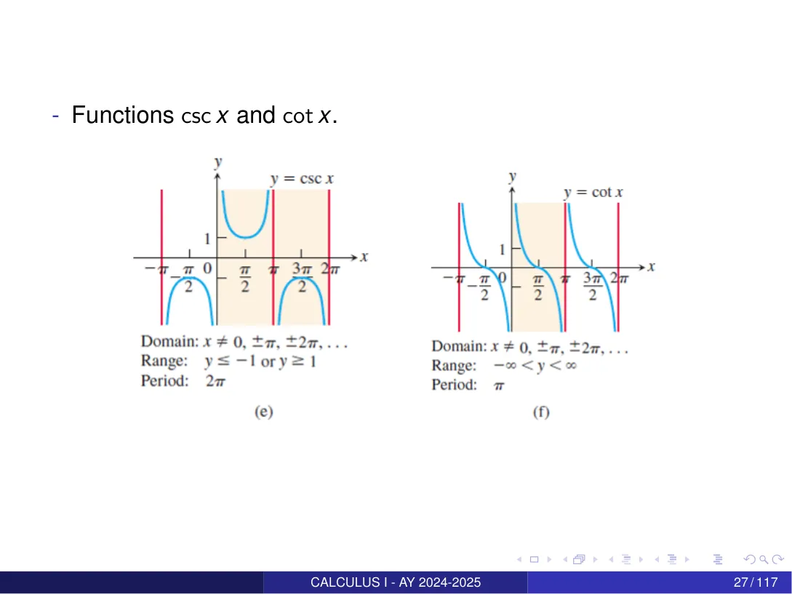
$\csc x=\frac1{\sin x}$ and $\cot x=\frac{\cos x}{\sin x}$ are undefined where $\sin x=0$, i.e. $x=k\pi$. $\cot$ is odd with period $\pi$; $\csc$ is odd with period $2\pi$. These two are the mirror images of $\sec$ and $\tan$ shifted by $\frac\pi2$.
$\csc x=\frac1{\sin x}$ và $\cot x=\frac{\cos x}{\sin x}$ không xác định khi $\sin x=0$, tức $x=k\pi$. $\cot$ là hàm lẻ chu kỳ $\pi$; $\csc$ là hàm lẻ chu kỳ $2\pi$. Hai hàm này là ảnh của $\sec$ và $\tan$ dịch đi $\frac\pi2$.
Where is $\cot x$ undefined?
$\cot x$ không xác định ở đâu?
Answer and solution · Đáp án và lời giải
Answer · Đáp án: $x=k\pi,\ k\in\mathbb Z$
$\cot x=\frac{\cos x}{\sin x}$ fails where $\sin x=0$, i.e. at every integer multiple of $\pi$.
$\cot x=\frac{\cos x}{\sin x}$ không xác định khi $\sin x=0$, tức tại mọi bội nguyên của $\pi$.
Exponential functions · Hàm mũ
★★★ Core · Cốt lõi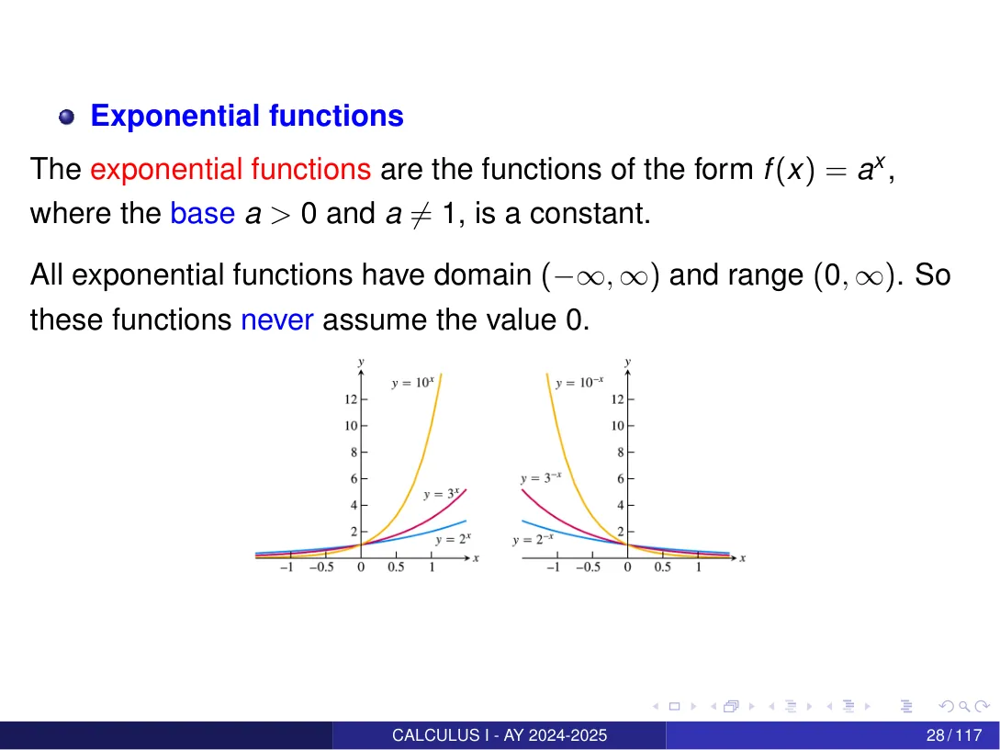
$f(x)=a^x$ with base $a>0$, $a\ne1$. Domain $\mathbb R$, range $(0,\infty)$: it never takes the value $0$ (or a negative value). Every exponential passes through $(0,1)$; it grows if $a>1$ and decays if $0<a<1$.
$f(x)=a^x$ với cơ số $a>0$, $a\ne1$. Tập xác định $\mathbb R$, tập giá trị $(0,\infty)$: hàm không bao giờ nhận giá trị $0$ (hay giá trị âm). Mọi hàm mũ đều đi qua $(0,1)$; tăng nếu $a>1$ và giảm nếu $0<a<1$.
Solve $2^x=\dfrac18$.
Giải phương trình $2^x=\dfrac18$.
Answer and solution · Đáp án và lời giải
Answer · Đáp án: $x=-3$
$\frac18=2^{-3}$, and $2^x$ takes each value only once.
$\frac18=2^{-3}$, và $2^x$ chỉ nhận mỗi giá trị một lần.
Logarithmic functions · Hàm logarit
★★★ Core · Cốt lõi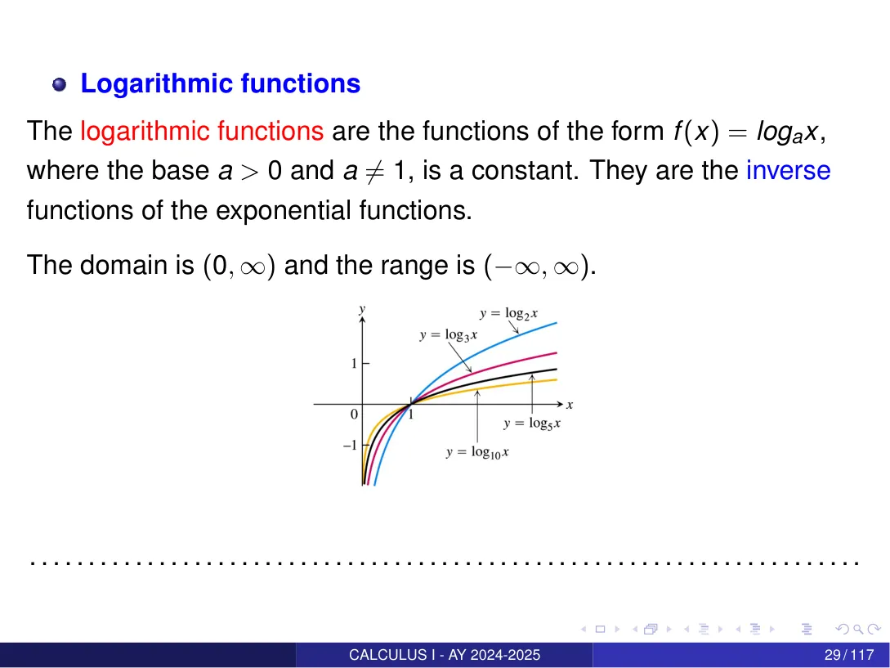
$\log_ax$ is the inverse of $a^x$: $y=\log_ax\iff a^y=x$. Domain $(0,\infty)$, range $\mathbb R$. Its graph is the mirror image of $a^x$ in the line $y=x$ and passes through $(1,0)$. $\ln$ is the logarithm to base $e$.
$\log_ax$ là hàm ngược của $a^x$: $y=\log_ax\iff a^y=x$. Tập xác định $(0,\infty)$, tập giá trị $\mathbb R$. Đồ thị là ảnh đối xứng của $a^x$ qua đường thẳng $y=x$ và đi qua $(1,0)$. $\ln$ là logarit cơ số $e$.
Find the domain of $\log_2(x-1)$ and solve $\log_3x=2$.
Tìm tập xác định của $\log_2(x-1)$ và giải $\log_3x=2$.
Answer and solution · Đáp án và lời giải
Answer · Đáp án: domain $(1,\infty)$; $x=9$
The argument must be positive: $x-1>0$. And $\log_3x=2\iff x=3^2=9$.
Đối số phải dương: $x-1>0$. Và $\log_3x=2\iff x=3^2=9$.
Roadmap: now limits · Lộ trình: bây giờ là giới hạn
★ Context · Bổ trợ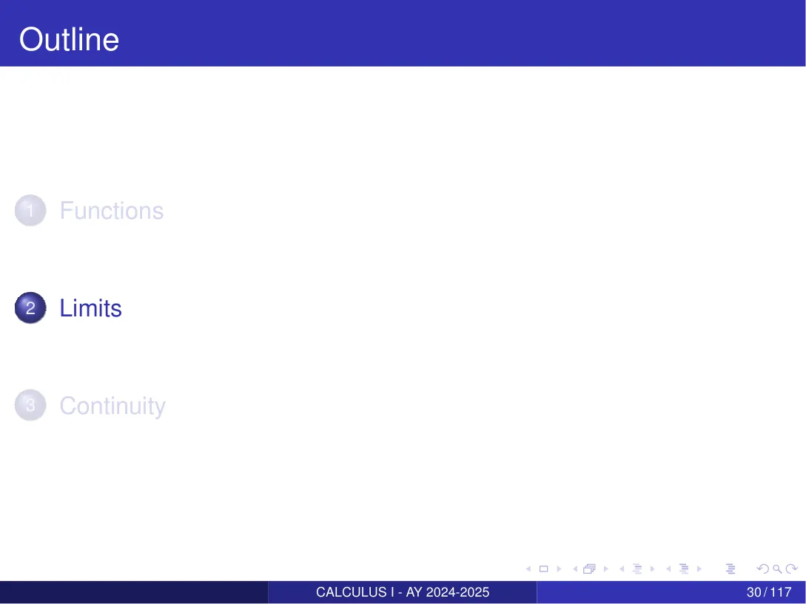
The outline again, now at part 2. Mark the change of gear: the first part was vocabulary; from here on we meet a genuinely new idea.
Lại là lộ trình, nay ở phần 2. Đánh dấu việc đổi nhịp: phần đầu là từ vựng; từ đây ta gặp một ý tưởng thật sự mới.
What the limits section covers · Phần giới hạn gồm những gì
★ Context · Bổ trợ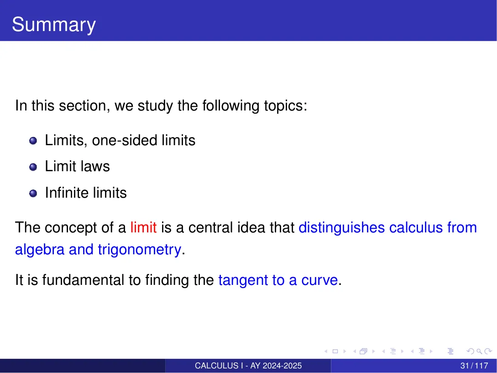
Topics: limits and one-sided limits, limit laws, infinite limits. The slide's key sentence: the limit is the central idea that distinguishes calculus from algebra and trigonometry, and it is fundamental to finding the tangent to a curve.
Các chủ đề: giới hạn và giới hạn một phía, các quy tắc giới hạn, giới hạn vô cực. Câu then chốt trên slide: giới hạn là ý tưởng trung tâm phân biệt giải tích với đại số và lượng giác, và nó là nền tảng để tìm tiếp tuyến của một đường cong.
What is a tangent line? · Tiếp tuyến là gì?
★★ Important · Quan trọng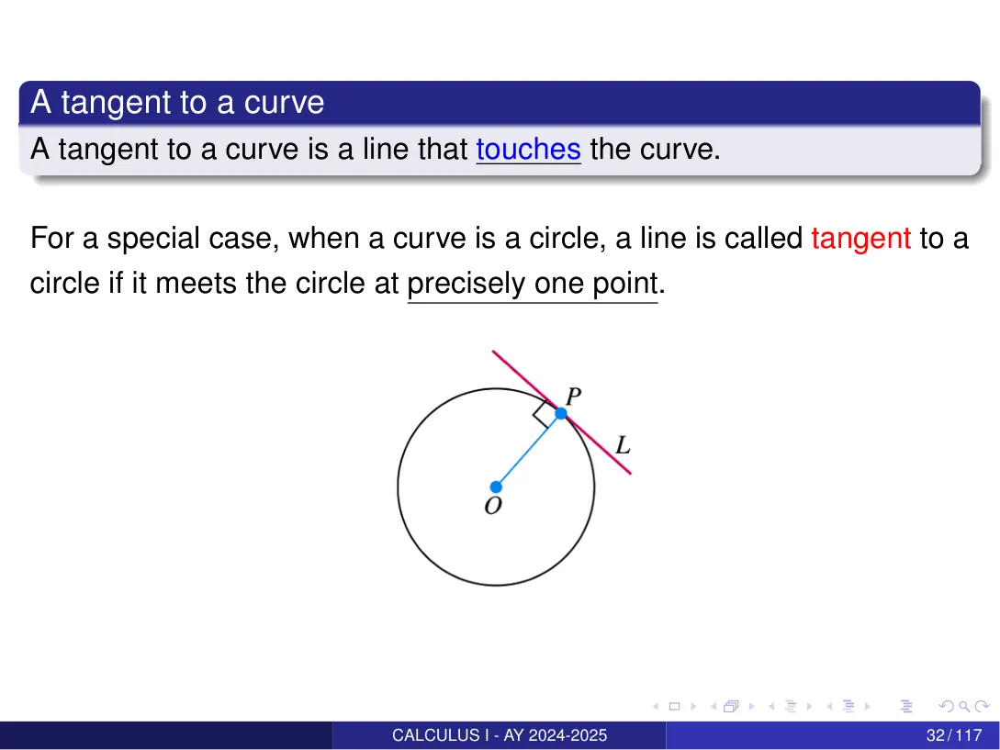
For a circle, "a tangent meets the circle at exactly one point" is a fine definition. Ask whether it works for other curves: it does not. A vertical line meets the parabola $y=x^2$ at exactly one point, yet it is not tangent; and the tangent to $y=x^3$ at $(1,1)$ meets the curve again at another point. So we need a new definition, and that is where limits come in.
Với đường tròn, "tiếp tuyến cắt đường tròn tại đúng một điểm" là một định nghĩa tốt. Hỏi bạn xem nó có đúng với các đường cong khác không: không. Một đường thẳng đứng cắt parabol $y=x^2$ tại đúng một điểm, nhưng không phải tiếp tuyến; còn tiếp tuyến của $y=x^3$ tại $(1,1)$ lại cắt đường cong thêm một điểm nữa. Vậy cần một định nghĩa mới, và đó là chỗ giới hạn xuất hiện.
The line $y=3x-2$ touches $y=x^3$ at $(1,1)$ (you will prove it in Chapter 2). At which other point does it meet the curve?
Đường thẳng $y=3x-2$ tiếp xúc với $y=x^3$ tại $(1,1)$ (bạn sẽ chứng minh ở Chương 2). Nó cắt đường cong tại điểm nào khác?
Answer and solution · Đáp án và lời giải
Answer · Đáp án: $(-2,-8)$
Solve $x^3=3x-2$, i.e. $x^3-3x+2=(x-1)^2(x+2)=0$: besides the double root $x=1$ there is $x=-2$, giving $y=-8$.
Giải $x^3=3x-2$, tức $x^3-3x+2=(x-1)^2(x+2)=0$: ngoài nghiệm kép $x=1$ còn có $x=-2$, cho $y=-8$.
From secants to the tangent · Từ cát tuyến đến tiếp tuyến
★★★ Core · Cốt lõi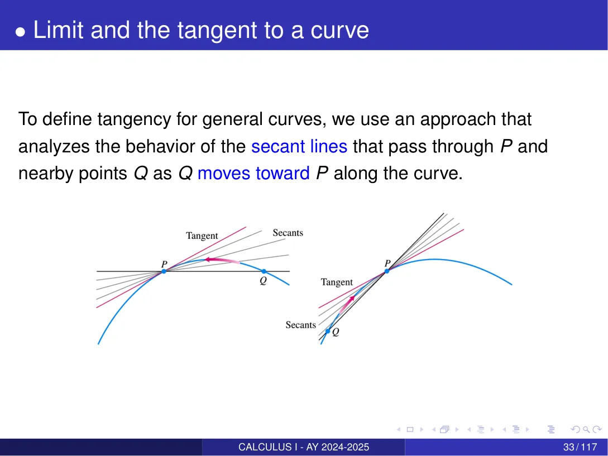
Fix $P$ on the curve and let a second point $Q$ slide towards $P$. Each line $PQ$ is a secant. As $Q\to P$ the secants rotate and settle on one limiting line, and that limiting line is the tangent. The slopes of the secants approach one number, the slope of the tangent. This is the first appearance of a limit, and it will become the derivative in Chapter 2.
Cố định $P$ trên đường cong và cho điểm thứ hai $Q$ trượt về phía $P$. Mỗi đường thẳng $PQ$ là một cát tuyến. Khi $Q\to P$ các cát tuyến xoay và dần ổn định thành một đường giới hạn, và đường giới hạn đó chính là tiếp tuyến. Hệ số góc của các cát tuyến tiến tới một số, đó là hệ số góc của tiếp tuyến. Đây là lần đầu giới hạn xuất hiện, và nó sẽ trở thành đạo hàm ở Chương 2.
The derivative is defined as exactly this limit of secant slopes; this slide is the whole story of Chapter 2 in one picture.
Đạo hàm được định nghĩa chính là giới hạn này của hệ số góc các cát tuyến; slide này là cả câu chuyện của Chương 2 trong một hình vẽ.
For $y=x^2$ and $P=(1,1)$, compute the slope of the secant through $Q=(1+h,(1+h)^2)$ and its limit as $h\to0$.
Với $y=x^2$ và $P=(1,1)$, tính hệ số góc của cát tuyến qua $Q=(1+h,(1+h)^2)$ và giới hạn của nó khi $h\to0$.
Answer and solution · Đáp án và lời giải
Answer · Đáp án: slope $2+h$; limit $2$
$\dfrac{(1+h)^2-1}{h}=\dfrac{2h+h^2}{h}=2+h\to2$ as $h\to0$. So the tangent at $(1,1)$ has slope $2$.
$\dfrac{(1+h)^2-1}{h}=\dfrac{2h+h^2}{h}=2+h\to2$ khi $h\to0$. Vậy tiếp tuyến tại $(1,1)$ có hệ số góc $2$.
The idea of a limit · Ý tưởng về giới hạn
★★★ Core · Cốt lõi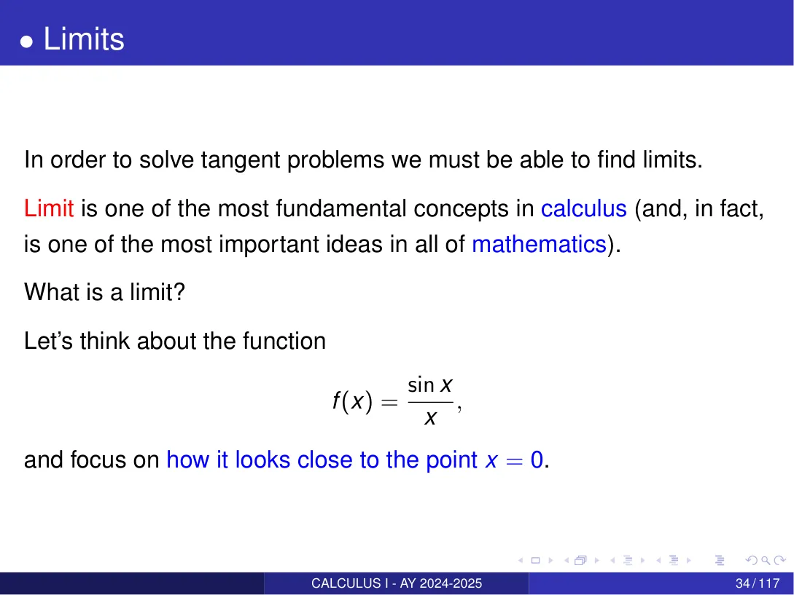
To solve tangent problems we must be able to find limits. Say that limit is one of the most important ideas in all of mathematics. Introduce the test case $f(x)=\frac{\sin x}{x}$ and ask the student to focus on what happens near $x=0$, not at $0$.
Để giải bài toán tiếp tuyến, ta phải biết tìm giới hạn. Nói rằng giới hạn là một trong những ý tưởng quan trọng nhất của toàn bộ toán học. Giới thiệu ví dụ thử nghiệm $f(x)=\frac{\sin x}{x}$ và yêu cầu bạn chú ý xem điều gì xảy ra gần $x=0$, chứ không phải tại $0$.
The key idea: approaching without arriving · Ý chính: tiến gần mà không cần chạm tới
★★★ Core · Cốt lõi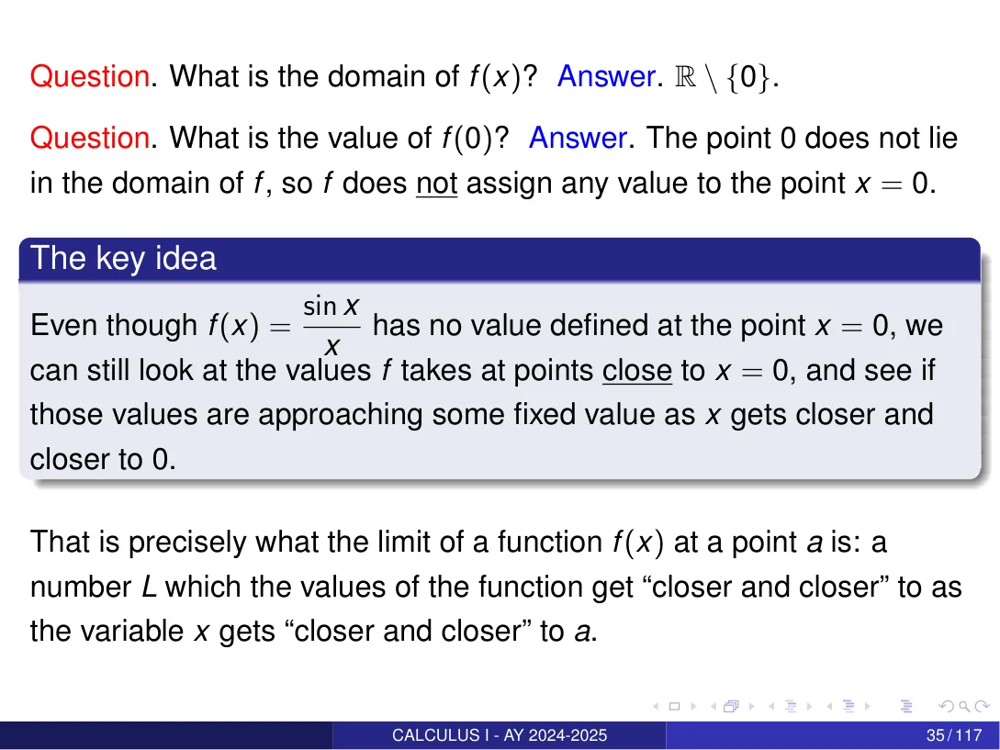
Two quick questions with answers: the domain of $\frac{\sin x}{x}$ is $\mathbb R\setminus\{0\}$, and $f(0)$ does not exist. Yet the values near $0$ behave nicely. The limit of $f$ at $a$ is the number $L$ that the values $f(x)$ approach as $x$ approaches $a$, whether or not $f(a)$ exists, and whatever its value is.
Hai câu hỏi nhanh kèm đáp án: tập xác định của $\frac{\sin x}{x}$ là $\mathbb R\setminus\{0\}$, và $f(0)$ không tồn tại. Tuy vậy các giá trị gần $0$ lại rất đẹp. Giới hạn của $f$ tại $a$ là số $L$ mà các giá trị $f(x)$ tiến tới khi $x$ tiến tới $a$, dù $f(a)$ có tồn tại hay không, và dù giá trị đó là bao nhiêu.
Derivatives and integrals are both limits of quantities that are undefined at the limiting point (like $\frac00$): the limit is how we give them a meaning.
Đạo hàm và tích phân đều là giới hạn của những đại lượng không xác định tại điểm giới hạn (như $\frac00$): giới hạn là cách để chúng có nghĩa.
Numerical evidence · Bằng chứng số học
★★★ Core · Cốt lõi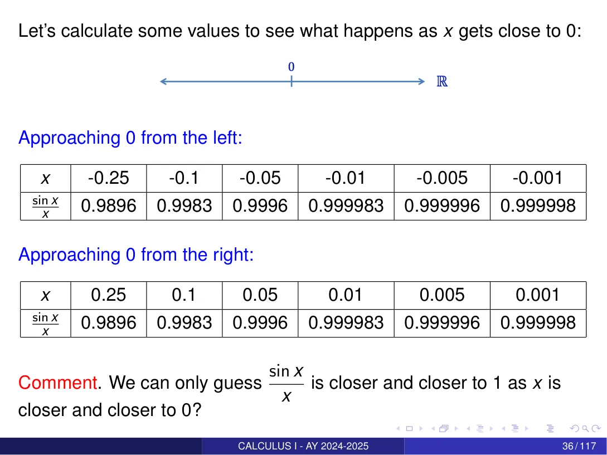
Fill the table with the student's calculator (in radians!). The values at $\pm0.25,\pm0.1,\pm0.05,\dots$ approach $1$ from below on both sides, and the two rows coincide because $\frac{\sin x}{x}$ is even. The slide itself says "we can only guess": a table suggests a limit but proves nothing; proof comes from the definition (slide 38) or from theorems.
Minor typo on the slide: the last entry should read $0.9999998$, since $\frac{\sin0.001}{0.001}=0.99999983\ldots$
Điền bảng bằng máy tính của bạn (chế độ radian!). Các giá trị tại $\pm0.25,\pm0.1,\pm0.05,\dots$ tiến tới $1$ từ phía dưới ở cả hai bên, và hai hàng bằng nhau vì $\frac{\sin x}{x}$ là hàm chẵn. Chính slide cũng nói "ta chỉ có thể đoán": bảng số gợi ý giới hạn nhưng không chứng minh; chứng minh đến từ định nghĩa (slide 38) hoặc từ các định lý.
Lỗi nhỏ trên slide: số cuối bảng phải là $0.9999998$, vì $\frac{\sin0.001}{0.001}=0.99999983\ldots$
Make a table at $x=\pm0.1,\pm0.01,\pm0.001$ and guess $\lim_{x\to0}\dfrac{e^x-1}{x}$.
Lập bảng tại $x=\pm0.1,\pm0.01,\pm0.001$ và đoán $\lim_{x\to0}\dfrac{e^x-1}{x}$.
Answer and solution · Đáp án và lời giải
Answer · Đáp án: $1$
For $x=0.1,0.01,0.001$ the quotient is $1.0517,\ 1.0050,\ 1.0005$; for $x=-0.1,-0.01,-0.001$ it is $0.9516,\ 0.9950,\ 0.9995$. Both sides approach $1$.
Với $x=0.1,0.01,0.001$ thương là $1.0517,\ 1.0050,\ 1.0005$; với $x=-0.1,-0.01,-0.001$ là $0.9516,\ 0.9950,\ 0.9995$. Cả hai phía đều tiến tới $1$.
The graph of $\sin x/x$ · Đồ thị của $\sin x/x$
★★ Important · Quan trọng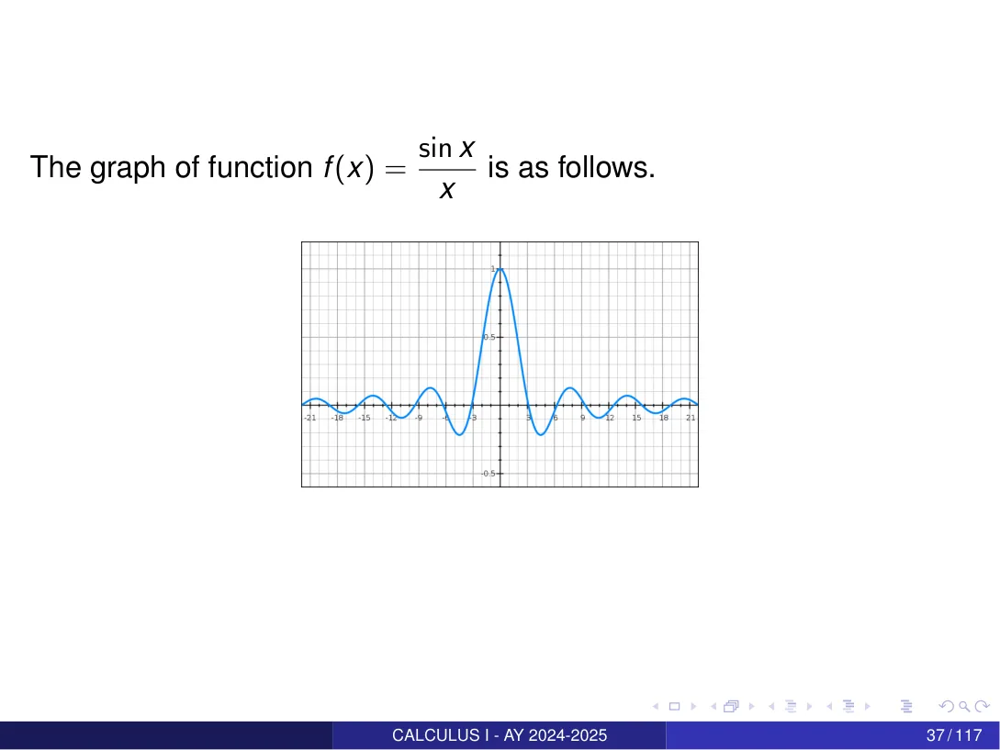
The graph is an even, decaying wave with a hole at $(0,1)$: the curve heads for height $1$ from both sides of $x=0$, but the point $(0,1)$ itself is missing. Read the limit from the picture: follow the curve from the left and from the right towards $x=0$ and see where it is heading.
Đồ thị là một sóng chẵn tắt dần với một "lỗ" tại $(0,1)$: đường cong hướng tới độ cao $1$ từ cả hai phía của $x=0$, nhưng bản thân điểm $(0,1)$ bị thiếu. Đọc giới hạn từ hình: lần theo đường cong từ bên trái và từ bên phải về $x=0$ và xem nó đang hướng tới đâu.
The formal ε–δ definition of a limit · Định nghĩa chính xác ε–δ của giới hạn
★★★ Core · Cốt lõi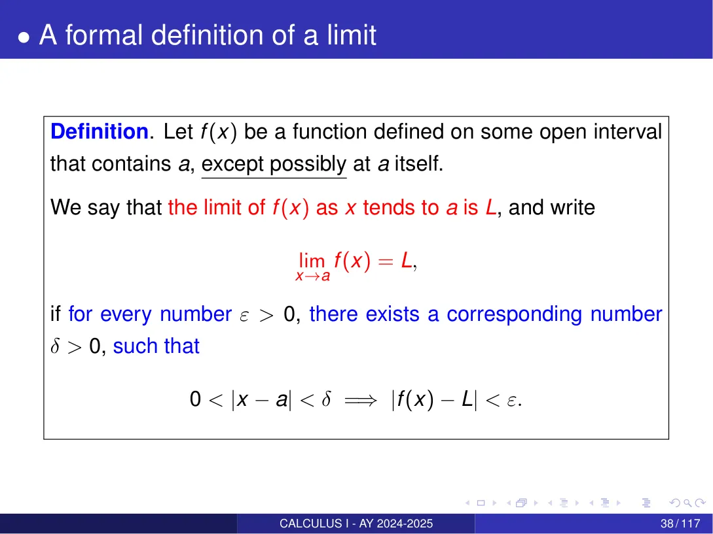
Take it in four steps.
- $\varepsilon>0$ is a tolerance on the output: how close to $L$ we want $f(x)$.
- $\delta>0$ is the answer on the input side: how close to $a$ we must keep $x$.
- "$0<|x-a|$" means $x\ne a$: the value at $a$ is irrelevant.
- "for every $\varepsilon$ there is a $\delta$": however small a tolerance you demand, a window that works exists.
Present it as a game: the student names $\varepsilon$, we answer with $\delta$.
Đi qua bốn bước.
- $\varepsilon>0$ là sai số cho phép ở đầu ra: ta muốn $f(x)$ gần $L$ đến mức nào.
- $\delta>0$ là câu trả lời ở phía đầu vào: phải giữ $x$ gần $a$ đến mức nào.
- "$0<|x-a|$" nghĩa là $x\ne a$: giá trị tại $a$ không quan trọng.
- "với mọi $\varepsilon$ tồn tại $\delta$": dù đòi sai số nhỏ đến đâu, vẫn có một cửa sổ thỏa mãn.
Trình bày như một trò chơi: bạn nêu $\varepsilon$, ta trả lời bằng $\delta$.
This is the one rigorous definition of Chapter 1; every limit law and the definitions of continuity and derivative rest on it, and it is a standard proof question in tests.
Đây là định nghĩa chặt chẽ duy nhất của Chương 1; mọi quy tắc giới hạn và định nghĩa liên tục, đạo hàm đều dựa vào nó, và nó là dạng chứng minh thường gặp trong đề.
Write in symbols: "$f(x)$ is within $0.01$ of $5$ whenever $x$ is within $0.002$ of $3$ and $x\ne3$."
Viết bằng ký hiệu: "$f(x)$ cách $5$ không quá $0.01$ mỗi khi $x$ cách $3$ không quá $0.002$ và $x\ne3$."
Answer and solution · Đáp án và lời giải
Answer · Đáp án: $0<|x-3|<0.002\ \Rightarrow\ |f(x)-5|<0.01$
Here $a=3$, $L=5$, $\varepsilon=0.01$ and $\delta=0.002$: this is one instance of the definition for $\lim_{x\to3}f(x)=5$. (If the implication holds for every $\varepsilon$ with a suitable $\delta$, the limit is $5$.)
Ở đây $a=3$, $L=5$, $\varepsilon=0.01$ và $\delta=0.002$: đây là một trường hợp của định nghĩa cho $\lim_{x\to3}f(x)=5$. (Nếu mệnh đề kéo theo đúng với mọi $\varepsilon$ và một $\delta$ thích hợp thì giới hạn là $5$.)
The ε–δ picture · Hình minh họa ε–δ
★★ Important · Quan trọng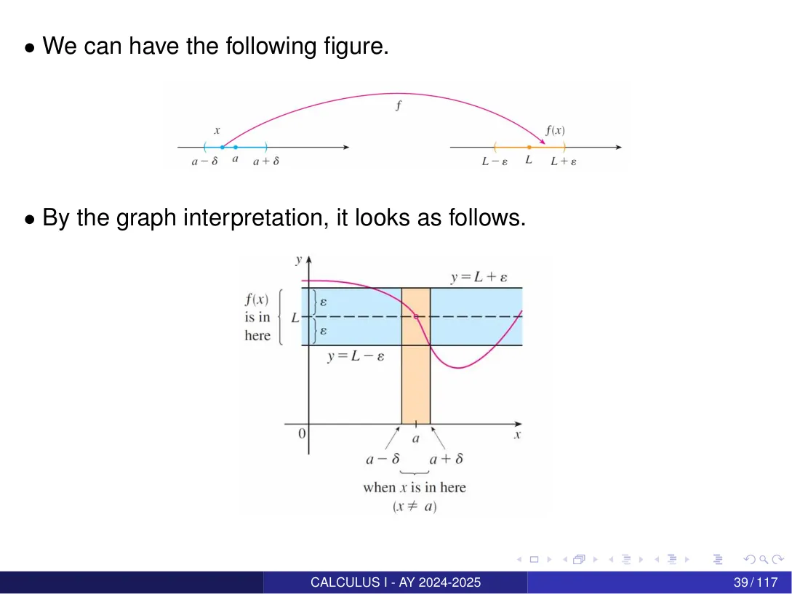
Draw it on the board: a horizontal strip of half-width $\varepsilon$ around $L$, and a vertical strip of half-width $\delta$ around $a$. The definition says the part of the graph above the $\delta$-strip (except possibly at $x=a$) lies inside the $\varepsilon$-strip. Shrink $\varepsilon$ and show that $\delta$ must shrink too.
Vẽ lên bảng: một dải ngang nửa bề rộng $\varepsilon$ quanh $L$, và một dải đứng nửa bề rộng $\delta$ quanh $a$. Định nghĩa nói phần đồ thị nằm trên dải $\delta$ (trừ có thể tại $x=a$) phải nằm trong dải $\varepsilon$. Thu nhỏ $\varepsilon$ và cho thấy $\delta$ cũng phải nhỏ lại.
How to prove a limit from the definition · Cách chứng minh giới hạn bằng định nghĩa
★★★ Core · Cốt lõi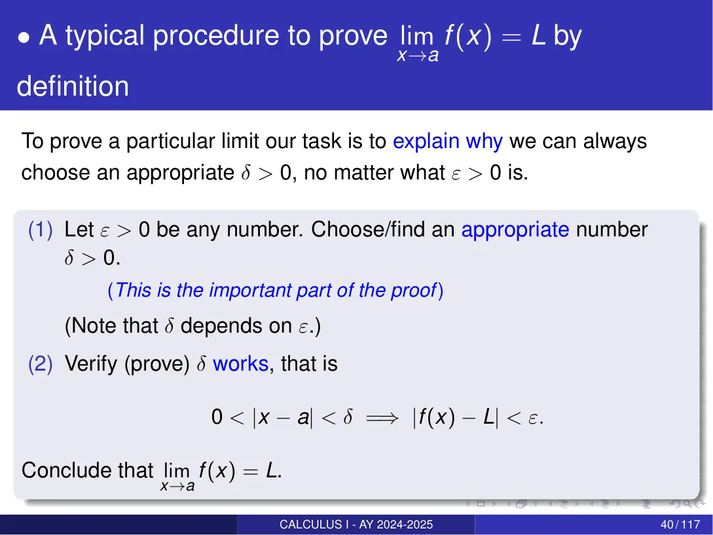
Give the two-step template.
1. Scratch work. Start from the target $|f(x)-L|<\varepsilon$ and solve backwards for a $\delta$ that works. Note that $\delta$ depends on $\varepsilon$.
2. The proof. Write it forwards: given $\varepsilon>0$, choose that $\delta$; if $0<|x-a|<\delta$, then show $|f(x)-L|<\varepsilon$. Conclude $\lim_{x\to a}f(x)=L$.
Đưa ra khuôn hai bước.
1. Nháp. Bắt đầu từ đích $|f(x)-L|<\varepsilon$ và giải ngược để tìm $\delta$ thỏa mãn. Chú ý $\delta$ phụ thuộc vào $\varepsilon$.
2. Chứng minh. Viết xuôi: cho $\varepsilon>0$, chọn $\delta$ đó; nếu $0<|x-a|<\delta$ thì chỉ ra $|f(x)-L|<\varepsilon$. Kết luận $\lim_{x\to a}f(x)=L$.
Example: scratch work for $\lim_{x\to1}(7x-2)=5$ · Ví dụ: phần nháp cho $\lim_{x\to1}(7x-2)=5$
★★★ Core · Cốt lõi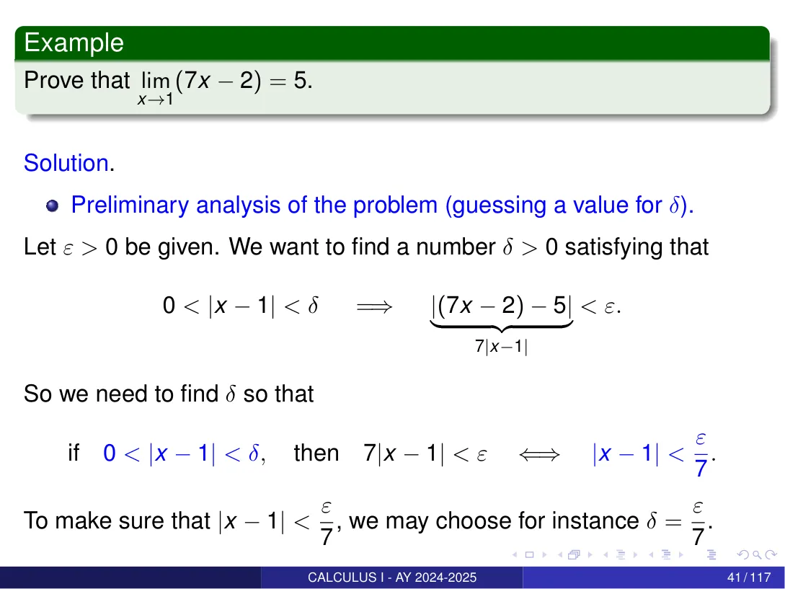
Do the scratch work with the student. $|(7x-2)-5|=|7x-7|=7|x-1|$. We need $7|x-1|<\varepsilon$, which is the same as $|x-1|<\frac\varepsilon7$. So the natural choice is $\delta=\frac\varepsilon7$. The coefficient $7$ is the slope: a line with slope $m$ needs $\delta=\frac{\varepsilon}{|m|}$.
Làm phần nháp cùng bạn. $|(7x-2)-5|=|7x-7|=7|x-1|$. Cần $7|x-1|<\varepsilon$, tương đương $|x-1|<\frac\varepsilon7$. Vậy lựa chọn tự nhiên là $\delta=\frac\varepsilon7$. Hệ số $7$ chính là hệ số góc: đường thẳng có hệ số góc $m$ cần $\delta=\frac{\varepsilon}{|m|}$.
Find $\delta$ in terms of $\varepsilon$ for $\lim_{x\to2}(3x+1)=7$.
Tìm $\delta$ theo $\varepsilon$ cho $\lim_{x\to2}(3x+1)=7$.
Answer and solution · Đáp án và lời giải
Answer · Đáp án: $\delta=\dfrac\varepsilon3$
$|(3x+1)-7|=3|x-2|<\varepsilon\iff|x-2|<\frac\varepsilon3$.
$|(3x+1)-7|=3|x-2|<\varepsilon\iff|x-2|<\frac\varepsilon3$.
Find $\delta$ in terms of $\varepsilon$ for $\lim_{x\to-1}(5-2x)=7$.
Tìm $\delta$ theo $\varepsilon$ cho $\lim_{x\to-1}(5-2x)=7$.
Answer and solution · Đáp án và lời giải
Answer · Đáp án: $\delta=\dfrac\varepsilon2$
$|(5-2x)-7|=|-2x-2|=2|x+1|<\varepsilon\iff|x+1|<\frac\varepsilon2$.
$|(5-2x)-7|=|-2x-2|=2|x+1|<\varepsilon\iff|x+1|<\frac\varepsilon2$.
Example: the proof, and the two stages · Ví dụ: phần chứng minh và hai giai đoạn
★★★ Core · Cốt lõi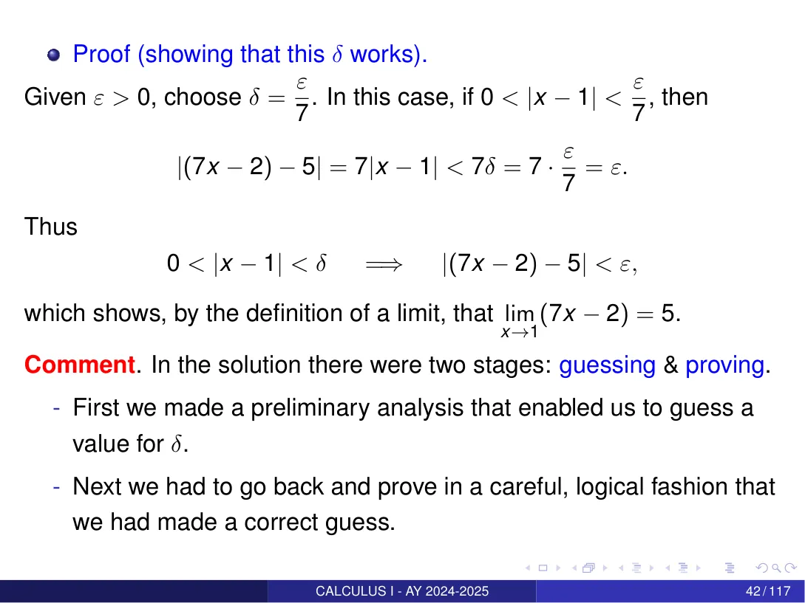
Now write the proof forwards. Given $\varepsilon>0$ choose $\delta=\frac\varepsilon7$. If $0<|x-1|<\delta$ then $|(7x-2)-5|=7|x-1|<7\delta=\varepsilon$. Hence $\lim_{x\to1}(7x-2)=5$. Stress the slide's comment: there are two stages, guessing $\delta$ and then proving it works; only the second goes into the written solution.
Bây giờ viết chứng minh theo chiều xuôi. Cho $\varepsilon>0$, chọn $\delta=\frac\varepsilon7$. Nếu $0<|x-1|<\delta$ thì $|(7x-2)-5|=7|x-1|<7\delta=\varepsilon$. Vậy $\lim_{x\to1}(7x-2)=5$. Nhấn mạnh nhận xét của slide: có hai giai đoạn, đoán $\delta$ rồi chứng minh nó đúng; chỉ giai đoạn thứ hai được viết vào bài giải.
Write a complete ε–δ proof that $\lim_{x\to4}(2x-3)=5$.
Viết chứng minh ε–δ đầy đủ cho $\lim_{x\to4}(2x-3)=5$.
Answer and solution · Đáp án và lời giải
Answer · Đáp án: Choose $\delta=\dfrac\varepsilon2$.
Given $\varepsilon>0$ let $\delta=\frac\varepsilon2$. If $0<|x-4|<\delta$ then $|(2x-3)-5|=|2x-8|=2|x-4|<2\delta=\varepsilon$. By the definition, $\lim_{x\to4}(2x-3)=5$.
Cho $\varepsilon>0$, đặt $\delta=\frac\varepsilon2$. Nếu $0<|x-4|<\delta$ thì $|(2x-3)-5|=|2x-8|=2|x-4|<2\delta=\varepsilon$. Theo định nghĩa, $\lim_{x\to4}(2x-3)=5$.
How to show that a limit does not exist · Làm sao chỉ ra giới hạn không tồn tại
★★ Important · Quan trọng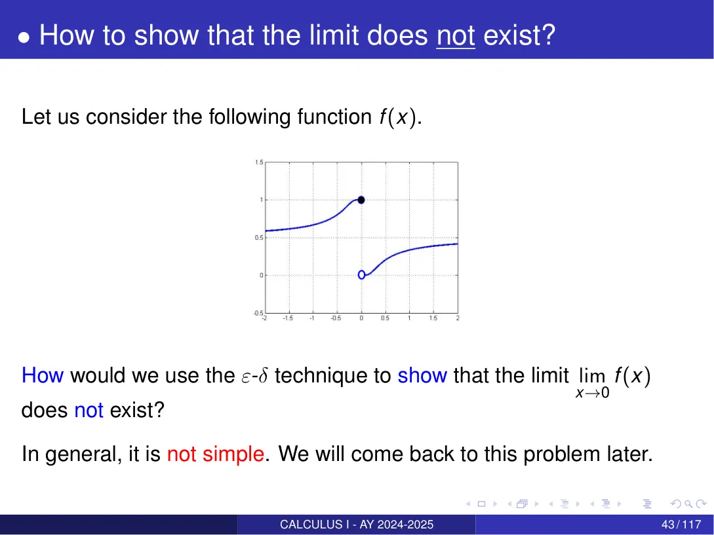
A function with a jump is shown. Proving with ε–δ that no number $L$ works is hard, and the slide promises to come back to it. Preview the easy tool coming next (slides 44–45): if the behaviour from the left and from the right disagree, the limit cannot exist.
Slide cho một hàm có bước nhảy. Chứng minh bằng ε–δ rằng không có số $L$ nào thỏa mãn là việc khó, và slide hứa sẽ quay lại. Giới thiệu trước công cụ dễ ở slide 44–45: nếu hành vi từ bên trái và từ bên phải khác nhau thì giới hạn không thể tồn tại.
One-sided limits: the Heaviside function · Giới hạn một phía: hàm Heaviside
★★★ Core · Cốt lõi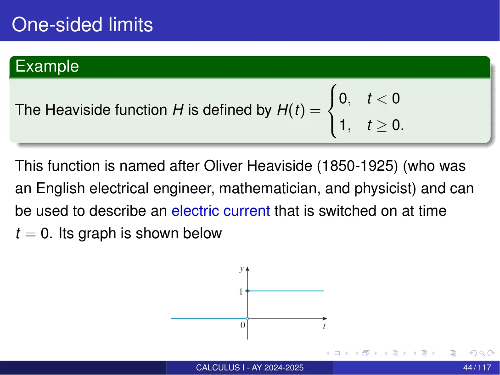
The Heaviside function is $H(t)=0$ for $t<0$ and $H(t)=1$ for $t\ge0$: a switch turned on at time $0$, named after the engineer Oliver Heaviside (1850–1925). The graph jumps from height $0$ to height $1$ at $t=0$.
Hàm Heaviside là $H(t)=0$ khi $t<0$ và $H(t)=1$ khi $t\ge0$: một công tắc bật tại thời điểm $0$, đặt theo tên kỹ sư Oliver Heaviside (1850–1925). Đồ thị nhảy từ độ cao $0$ lên độ cao $1$ tại $t=0$.
One-sided limits and when the limit does not exist · Giới hạn một phía và khi nào giới hạn không tồn tại
★★★ Core · Cốt lõi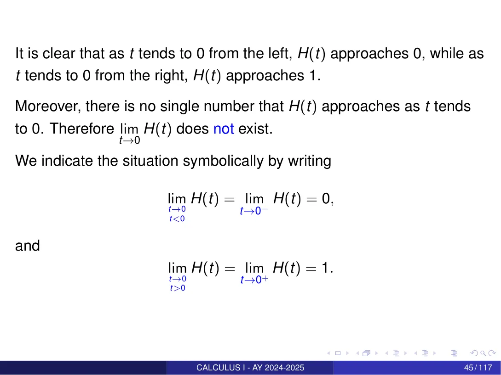
Approaching $0$ from the left, $H(t)\to0$; from the right, $H(t)\to1$. There is no single number, so $\lim_{t\to0}H(t)$ does not exist. Notation: $\lim_{t\to0^-}H(t)=0$ and $\lim_{t\to0^+}H(t)=1$. Rule to remember: the two-sided limit exists exactly when both one-sided limits exist and are equal.
Tiến tới $0$ từ bên trái thì $H(t)\to0$; từ bên phải thì $H(t)\to1$. Không có một số duy nhất, nên $\lim_{t\to0}H(t)$ không tồn tại. Ký hiệu: $\lim_{t\to0^-}H(t)=0$ và $\lim_{t\to0^+}H(t)=1$. Quy tắc cần nhớ: giới hạn hai phía tồn tại khi và chỉ khi cả hai giới hạn một phía tồn tại và bằng nhau.
Piecewise functions, absolute values and the continuity tests of the next lectures all use one-sided limits, and "the limit does not exist because the one-sided limits differ" is a standard exam answer.
Hàm xác định theo từng khoảng, giá trị tuyệt đối và các phép thử liên tục ở bài sau đều dùng giới hạn một phía, và "giới hạn không tồn tại vì hai giới hạn một phía khác nhau" là đáp án chuẩn trong đề.
Compute the one-sided limits of $f(x)=\dfrac{|x|}{x}$ at $0$. Does $\lim_{x\to0}f(x)$ exist?
Tính các giới hạn một phía của $f(x)=\dfrac{|x|}{x}$ tại $0$. $\lim_{x\to0}f(x)$ có tồn tại không?
Answer and solution · Đáp án và lời giải
Answer · Đáp án: left $-1$, right $1$: the limit does not exist
For $x<0$, $|x|=-x$ so $f(x)=-1$; for $x>0$, $f(x)=1$. The one-sided limits differ.
Với $x<0$, $|x|=-x$ nên $f(x)=-1$; với $x>0$, $f(x)=1$. Hai giới hạn một phía khác nhau nên giới hạn không tồn tại.
Let $f(x)=\begin{cases}x^2,&x<1\\2x+1,&x\ge1.\end{cases}$ Find $\lim_{x\to1^-}f$, $\lim_{x\to1^+}f$ and decide whether $\lim_{x\to1}f$ exists.
Cho $f(x)=\begin{cases}x^2,&x<1\\2x+1,&x\ge1.\end{cases}$ Tìm $\lim_{x\to1^-}f$, $\lim_{x\to1^+}f$ và xét xem $\lim_{x\to1}f$ có tồn tại không.
Answer and solution · Đáp án và lời giải
Answer · Đáp án: left $1$, right $3$: the limit does not exist
Left of $1$ use $x^2\to1$; right of $1$ use $2x+1\to3$. They differ, so the two-sided limit does not exist (and note $f(1)=3$ is irrelevant to this).
Bên trái $1$ dùng $x^2\to1$; bên phải $1$ dùng $2x+1\to3$. Hai giá trị khác nhau nên giới hạn hai phía không tồn tại (và $f(1)=3$ không ảnh hưởng gì ở đây).
One-sided limits in ε–δ language · Giới hạn một phía theo ngôn ngữ ε–δ
★★ Important · Quan trọng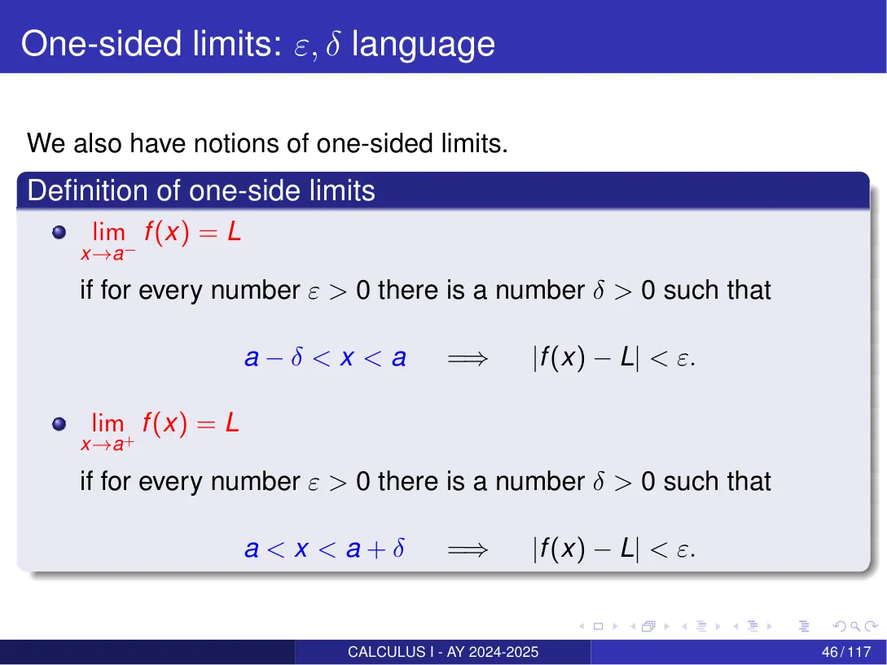
Same definition with half a window. Left limit: $a-\delta<x<a\Rightarrow|f(x)-L|<\varepsilon$. Right limit: $a<x<a+\delta\Rightarrow|f(x)-L|<\varepsilon$. Compare with slide 38: the two-sided definition is these two statements together (with the same $L$).
Cùng một định nghĩa nhưng chỉ lấy nửa cửa sổ. Giới hạn trái: $a-\delta<x<a\Rightarrow|f(x)-L|<\varepsilon$. Giới hạn phải: $a<x<a+\delta\Rightarrow|f(x)-L|<\varepsilon$. So với slide 38: định nghĩa hai phía là hai mệnh đề này cùng lúc (với cùng $L$).
The one-sided definitions in a picture · Các định nghĩa một phía qua hình vẽ
★★ Important · Quan trọng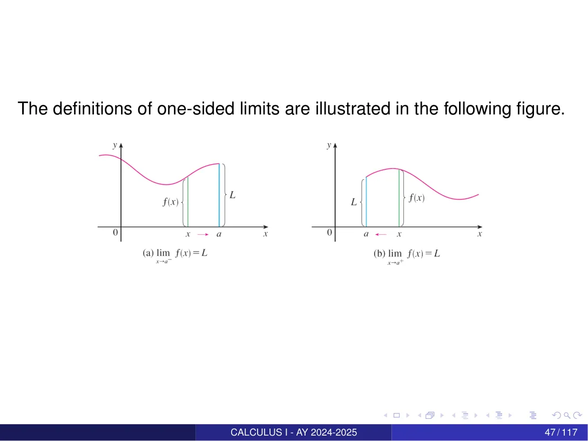
In the left-limit picture the $\delta$-window lies only to the left of $a$, and in the right-limit picture only to the right. Ask the student to redraw both pictures for $\lim_{x\to0^+}\sqrt x=0$ and to choose $\delta$ in terms of $\varepsilon$ (it is $\delta=\varepsilon^2$).
Ở hình giới hạn trái, cửa sổ $\delta$ chỉ nằm bên trái $a$, và ở hình giới hạn phải chỉ nằm bên phải. Yêu cầu bạn vẽ lại cả hai hình cho $\lim_{x\to0^+}\sqrt x=0$ và chọn $\delta$ theo $\varepsilon$ (đó là $\delta=\varepsilon^2$).
Prove $\lim_{x\to0^+}\sqrt x=0$ with the ε–δ definition.
Chứng minh $\lim_{x\to0^+}\sqrt x=0$ bằng định nghĩa ε–δ.
Answer and solution · Đáp án và lời giải
Answer · Đáp án: Choose $\delta=\varepsilon^2$.
Given $\varepsilon>0$ let $\delta=\varepsilon^2$. If $0<x<\delta$ then $|\sqrt x-0|=\sqrt x<\sqrt{\delta}=\varepsilon$.
Cho $\varepsilon>0$, đặt $\delta=\varepsilon^2$. Nếu $0<x<\delta$ thì $|\sqrt x-0|=\sqrt x<\sqrt{\delta}=\varepsilon$.